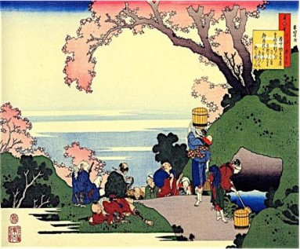

Ogura Hyakunin Isshu
#1. 天智天皇 Emperor Tenji (626-672) was the 38th Emperor of Japan. After overthrowing the Soga clan, he implemented the Taika reforms, moved the capital to Omi (Shiga Prefecture), and reigned as one who sincerely cared about his people, sympathizing, as here, with the peasants.
| 秋の田の | In the autumn rice field |
| かりほの庵の | temporary harvest hut, |
| 苫をあらみ | because of the loose rush-mat roof, |
| わが衣手は | my sleeves are |
| 露に濡れつつ | becoming wet from the dew. |

【秋の田の】 autumnal rice field.
【かりほの庵の】 かりほ is a kake-kotoba meaning ‘harvested grain’ (刈穂) and ‘harvest hut’ (仮庵); かりほ のいほの also enhances the rhythm by repeating the two syllables (hono).
【苫をあらみ】 とま ‘sedge mat’ あ らい ‘rough, loose.’ Noun を Adj み gives the reason. Elision: tomawarami
【わが衣出は】 が indicates possession; ころもで is a ka-go meaning ‘sleeves.’
【つゆにぬれつつ】 [(ぬる wet 下用)(つつ Continuative)] ‘keeps getting wet’ from the dew dripping through the roof.
Commentary: This poem alludes to an occasion on which the Emperor was helping farmers by scaring away birds as they harvested the crop. In a sudden rain shower, he sought shelter in a make-shift hut, thatched only with coarse rushes which afforded little protection. The slow, quiet dripping of the dew from the roof contrasts with the sweat of the farmers harvesting the rice. Mindful of their difficult labor, the Emperor sympathizes with the peasants.
#2. 持統天皇 Emperor Jitō (645-702), daughter of Emperor Tenji and 41st Emperor of Japan, ruled after her husband, the Emperor Tenmu, had died. At that time, smooth transition in the seasons was attributed to the wise rule of the Emperor. So, the depiction of summer arriving after spring has passed conveys a sense of hopefulness and satisfaction with the reign.
| 春過ぎて | Springtime having passed, |
| 夏来にけらし | summer seems to have arrived. |
| 白妙の | The snow-white |
| 衣干すてふ | robes are being dried, they say, |
| 天の香具山 | on celestial Kaguyama. |

【春過ぎて】 [(すぐ pass 上用)( つ Perfect 下用)]
【夏来にけらし】 [(く come カ 用)(ぬ Perfect ナ用)(けらし=け るらし Past Conjecture)]
【苫をあらみ】 とま ‘sedge mat’ あ らい ‘rough, loose.’ Noun を Adj み gives the reason. Elision: tomawarami
【わが衣出は】 が indicates possession; ころもで is a ka-go meaning ‘sleeves.’
【つゆにぬれつつ】 [(ぬる wet 下用)(つつ Continuative)] ‘keeps getting wet’ from the dew dripping through the roof.
Commentary:
#2. 天智天皇 Emperor Tenji (626-672) was the 38th...
| 秋の田の | In the autumn rice field |
【秋の田の】 autumnal rice field.
【かりほの庵の】 かりほ is a kake-kotoba meaning ‘harvested grain’ (刈穂) and ‘harvest hut’ (仮庵); かりほ のいほの also enhances the rhythm by repeating the two syllables (hono).
【苫をあらみ】 とま ‘sedge mat’ あ らい ‘rough, loose.’ Noun を Adj み gives the reason. Elision: tomawarami
【わが衣出は】 が indicates possession; ころもで is a ka-go meaning ‘sleeves.’
【つゆにぬれつつ】 [(ぬる wet 下用)(つつ Continuative)] ‘keeps getting wet’ from the dew dripping through the roof.
Commentary:
#2. 天智天皇 Emperor Tenji (626-672) was the 38th...
| 秋の田の | In the autumn rice field |
【秋の田の】 autumnal rice field.
【かりほの庵の】 かりほ is a kake-kotoba meaning ‘harvested grain’ (刈穂) and ‘harvest hut’ (仮庵); かりほ のいほの also enhances the rhythm by repeating the two syllables (hono).
【苫をあらみ】 とま ‘sedge mat’ あ らい ‘rough, loose.’ Noun を Adj み gives the reason. Elision: tomawarami
【わが衣出は】 が indicates possession; ころもで is a ka-go meaning ‘sleeves.’
【つゆにぬれつつ】 [(ぬる wet 下用)(つつ Continuative)] ‘keeps getting wet’ from the dew dripping through the roof.
Commentary:
#2. 天智天皇 Emperor Tenji (626-672) was the 38th...
| 秋の田の | In the autumn rice field |
【秋の田の】 autumnal rice field.
【かりほの庵の】 かりほ is a kake-kotoba meaning ‘harvested grain’ (刈穂) and ‘harvest hut’ (仮庵); かりほ のいほの also enhances the rhythm by repeating the two syllables (hono).
【苫をあらみ】 とま ‘sedge mat’ あ らい ‘rough, loose.’ Noun を Adj み gives the reason. Elision: tomawarami
【わが衣出は】 が indicates possession; ころもで is a ka-go meaning ‘sleeves.’
【つゆにぬれつつ】 [(ぬる wet 下用)(つつ Continuative)] ‘keeps getting wet’ from the dew dripping through the roof.
Commentary:
#2. 天智天皇 Emperor Tenji (626-672) was the 38th...
| 秋の田の | In the autumn rice field |
【秋の田の】 autumnal rice field.
【かりほの庵の】 かりほ is a kake-kotoba meaning ‘harvested grain’ (刈穂) and ‘harvest hut’ (仮庵); かりほ のいほの also enhances the rhythm by repeating the two syllables (hono).
【苫をあらみ】 とま ‘sedge mat’ あ らい ‘rough, loose.’ Noun を Adj み gives the reason. Elision: tomawarami
【わが衣出は】 が indicates possession; ころもで is a ka-go meaning ‘sleeves.’
【つゆにぬれつつ】 [(ぬる wet 下用)(つつ Continuative)] ‘keeps getting wet’ from the dew dripping through the roof.
Commentary:
#2. 天智天皇 Emperor Tenji (626-672) was the 38th...
| 秋の田の | In the autumn rice field |
【秋の田の】 autumnal rice field.
【かりほの庵の】 かりほ is a kake-kotoba meaning ‘harvested grain’ (刈穂) and ‘harvest hut’ (仮庵); かりほ のいほの also enhances the rhythm by repeating the two syllables (hono).
【苫をあらみ】 とま ‘sedge mat’ あ らい ‘rough, loose.’ Noun を Adj み gives the reason. Elision: tomawarami
【わが衣出は】 が indicates possession; ころもで is a ka-go meaning ‘sleeves.’
【つゆにぬれつつ】 [(ぬる wet 下用)(つつ Continuative)] ‘keeps getting wet’ from the dew dripping through the roof.
Commentary:
#2. 天智天皇 Emperor Tenji (626-672) was the 38th...
| 秋の田の | In the autumn rice field |
【秋の田の】 autumnal rice field.
【かりほの庵の】 かりほ is a kake-kotoba meaning ‘harvested grain’ (刈穂) and ‘harvest hut’ (仮庵); かりほ のいほの also enhances the rhythm by repeating the two syllables (hono).
【苫をあらみ】 とま ‘sedge mat’ あ らい ‘rough, loose.’ Noun を Adj み gives the reason. Elision: tomawarami
【わが衣出は】 が indicates possession; ころもで is a ka-go meaning ‘sleeves.’
【つゆにぬれつつ】 [(ぬる wet 下用)(つつ Continuative)] ‘keeps getting wet’ from the dew dripping through the roof.
Commentary:
#2. 天智天皇 Emperor Tenji (626-672) was the 38th...
| 秋の田の | In the autumn rice field |
【秋の田の】 autumnal rice field.
【かりほの庵の】 かりほ is a kake-kotoba meaning ‘harvested grain’ (刈穂) and ‘harvest hut’ (仮庵); かりほ のいほの also enhances the rhythm by repeating the two syllables (hono).
【苫をあらみ】 とま ‘sedge mat’ あ らい ‘rough, loose.’ Noun を Adj み gives the reason. Elision: tomawarami
【わが衣出は】 が indicates possession; ころもで is a ka-go meaning ‘sleeves.’
【つゆにぬれつつ】 [(ぬる wet 下用)(つつ Continuative)] ‘keeps getting wet’ from the dew dripping through the roof.
Commentary:
#2. 天智天皇 Emperor Tenji (626-672) was the 38th...
| 秋の田の | In the autumn rice field |
【秋の田の】 autumnal rice field.
【かりほの庵の】 かりほ is a kake-kotoba meaning ‘harvested grain’ (刈穂) and ‘harvest hut’ (仮庵); かりほ のいほの also enhances the rhythm by repeating the two syllables (hono).
【苫をあらみ】 とま ‘sedge mat’ あ らい ‘rough, loose.’ Noun を Adj み gives the reason. Elision: tomawarami
【わが衣出は】 が indicates possession; ころもで is a ka-go meaning ‘sleeves.’
【つゆにぬれつつ】 [(ぬる wet 下用)(つつ Continuative)] ‘keeps getting wet’ from the dew dripping through the roof.
Commentary:
#2. 天智天皇 Emperor Tenji (626-672) was the 38th...
| 秋の田の | In the autumn rice field |
【秋の田の】 autumnal rice field.
【かりほの庵の】 かりほ is a kake-kotoba meaning ‘harvested grain’ (刈穂) and ‘harvest hut’ (仮庵); かりほ のいほの also enhances the rhythm by repeating the two syllables (hono).
【苫をあらみ】 とま ‘sedge mat’ あ らい ‘rough, loose.’ Noun を Adj み gives the reason. Elision: tomawarami
【わが衣出は】 が indicates possession; ころもで is a ka-go meaning ‘sleeves.’
【つゆにぬれつつ】 [(ぬる wet 下用)(つつ Continuative)] ‘keeps getting wet’ from the dew dripping through the roof.
Commentary:
#2. 天智天皇 Emperor Tenji (626-672) was the 38th...
| 秋の田の | In the autumn rice field |
【秋の田の】 autumnal rice field.
【かりほの庵の】 かりほ is a kake-kotoba meaning ‘harvested grain’ (刈穂) and ‘harvest hut’ (仮庵); かりほ のいほの also enhances the rhythm by repeating the two syllables (hono).
【苫をあらみ】 とま ‘sedge mat’ あ らい ‘rough, loose.’ Noun を Adj み gives the reason. Elision: tomawarami
【わが衣出は】 が indicates possession; ころもで is a ka-go meaning ‘sleeves.’
【つゆにぬれつつ】 [(ぬる wet 下用)(つつ Continuative)] ‘keeps getting wet’ from the dew dripping through the roof.
Commentary:
#2. 天智天皇 Emperor Tenji (626-672) was the 38th...
| 秋の田の | In the autumn rice field |
【秋の田の】 autumnal rice field.
【かりほの庵の】 かりほ is a kake-kotoba meaning ‘harvested grain’ (刈穂) and ‘harvest hut’ (仮庵); かりほ のいほの also enhances the rhythm by repeating the two syllables (hono).
【苫をあらみ】 とま ‘sedge mat’ あ らい ‘rough, loose.’ Noun を Adj み gives the reason. Elision: tomawarami
【わが衣出は】 が indicates possession; ころもで is a ka-go meaning ‘sleeves.’
【つゆにぬれつつ】 [(ぬる wet 下用)(つつ Continuative)] ‘keeps getting wet’ from the dew dripping through the roof.
Commentary:
#2. 天智天皇 Emperor Tenji (626-672) was the 38th...
| 秋の田の | In the autumn rice field |
【秋の田の】 autumnal rice field.
【かりほの庵の】 かりほ is a kake-kotoba meaning ‘harvested grain’ (刈穂) and ‘harvest hut’ (仮庵); かりほ のいほの also enhances the rhythm by repeating the two syllables (hono).
【苫をあらみ】 とま ‘sedge mat’ あ らい ‘rough, loose.’ Noun を Adj み gives the reason. Elision: tomawarami
【わが衣出は】 が indicates possession; ころもで is a ka-go meaning ‘sleeves.’
【つゆにぬれつつ】 [(ぬる wet 下用)(つつ Continuative)] ‘keeps getting wet’ from the dew dripping through the roof.
Commentary:
#51. 藤原実方朝臣 Fujiwara-no-Sanekata (?-998) was the great-grandchild of Teishinko (#26). After a quarrel with Fujiwara-no- Yukinari (son of Fujiwara no Yoshitaka [#50]), he was demoted to a post in Mutsu, where he eventually passed away.
| かくとだに | Even (loving you) in this way |
| えやはいぶきの | I could not tell you, (like) Ibuki’s |
| さしも草< | moxa plant, |
| さしも知らじな | how unaware you are |
| 燃ゆる思ひを | of my burning thoughts. |
【かくとだに】 かく thus; だに even.
【えやはいぶきの】 えやは as if; い ぶき is a kake-kotoba meaning the mountain, ‘breath’ (伊吹) and ‘how should I tell’ (言), and uta-makura for Mt. Ibuki (伊吹山 Gifu Pref), known for its mugwort. [(う get 下 体)(やは Irony)]
【さしも草】 mugwort used in moxibustion
【さしも知らじな】 さしも ‘how, to what extent,’ echoes さしも‘moxa plant.’ な is an interjectory particle. [(しる四未)(じ Negative Conj)]
【燃ゆる思ひを】 ひ in 思ひ is also a kake-kotoba for ‘fire’ (火). さしも 草, 燃ゆる and ひ are all en-gos.
Commentary: The poet employs many poetic literary devices to skillfully convey his love in this poem. The kake-kotobas in the poem could be interpreted as follows: “How should I describe to you (いぶき) that I love you so, and how unaware you are. Like Mount Ibuki (いぶき)’s moxa grass, my thoughts are burning.” The headnote of this poem in its source, Goshūi Wakashū, says, “Composed right after (the poet) started seeing her,” so it is likely that the poet sent this poem as a part of the first letter to the woman he was passionately in love with. Even though they are rarely heard of today, Japanese mugworts were commonly used by people, including ladies, of the Heian period during moxibustion treatments.
#51. 藤原実方朝臣 Fujiwara-no-Sanekata (?-998) was the great-grandchild of Teishinko (#26). After a quarrel with Fujiwara-no- Yukinari (son of Fujiwara no Yoshitaka [#50]), he was demoted to a post in Mutsu, where he eventually passed away.
| かくとだに | Even (loving you) in this way |
| えやはいぶきの | I could not tell you, (like) Ibuki’s |
| さしも草< | moxa plant, |
| さしも知らじな | how unaware you are |
| 燃ゆる思ひを | of my burning thoughts. |
【かくとだに】 かく thus; だに even.
【えやはいぶきの】 えやは as if; い ぶき is a kake-kotoba meaning the mountain, ‘breath’ (伊吹) and ‘how should I tell’ (言), and uta-makura for Mt. Ibuki (伊吹山 Gifu Pref), known for its mugwort. [(う get 下 体)(やは Irony)]
【さしも草】 mugwort used in moxibustion
【さしも知らじな】 さしも ‘how, to what extent,’ echoes さしも‘moxa plant.’ な is an interjectory particle. [(しる四未)(じ Negative Conj)]
【燃ゆる思ひを】 ひ in 思ひ is also a kake-kotoba for ‘fire’ (火). さしも 草, 燃ゆる and ひ are all en-gos.
Commentary: The poet employs many poetic literary devices to skillfully convey his love in this poem. The kake-kotobas in the poem could be interpreted as follows: “How should I describe to you (いぶき) that I love you so, and how unaware you are. Like Mount Ibuki (いぶき)’s moxa grass, my thoughts are burning.” The headnote of this poem in its source, Goshūi Wakashū, says, “Composed right after (the poet) started seeing her,” so it is likely that the poet sent this poem as a part of the first letter to the woman he was passionately in love with. Even though they are rarely heard of today, Japanese mugworts were commonly used by people, including ladies, of the Heian period during moxibustion treatments.
#51. 藤原実方朝臣 Fujiwara-no-Sanekata (?-998) was the great-grandchild of Teishinko (#26). After a quarrel with Fujiwara-no- Yukinari (son of Fujiwara no Yoshitaka [#50]), he was demoted to a post in Mutsu, where he eventually passed away.
| かくとだに | Even (loving you) in this way |
| えやはいぶきの | I could not tell you, (like) Ibuki’s |
| さしも草< | moxa plant, |
| さしも知らじな | how unaware you are |
| 燃ゆる思ひを | of my burning thoughts. |
【かくとだに】 かく thus; だに even.
【えやはいぶきの】 えやは as if; い ぶき is a kake-kotoba meaning the mountain, ‘breath’ (伊吹) and ‘how should I tell’ (言), and uta-makura for Mt. Ibuki (伊吹山 Gifu Pref), known for its mugwort. [(う get 下 体)(やは Irony)]
【さしも草】 mugwort used in moxibustion
【さしも知らじな】 さしも ‘how, to what extent,’ echoes さしも‘moxa plant.’ な is an interjectory particle. [(しる四未)(じ Negative Conj)]
【燃ゆる思ひを】 ひ in 思ひ is also a kake-kotoba for ‘fire’ (火). さしも 草, 燃ゆる and ひ are all en-gos.
Commentary: The poet employs many poetic literary devices to skillfully convey his love in this poem. The kake-kotobas in the poem could be interpreted as follows: “How should I describe to you (いぶき) that I love you so, and how unaware you are. Like Mount Ibuki (いぶき)’s moxa grass, my thoughts are burning.” The headnote of this poem in its source, Goshūi Wakashū, says, “Composed right after (the poet) started seeing her,” so it is likely that the poet sent this poem as a part of the first letter to the woman he was passionately in love with. Even though they are rarely heard of today, Japanese mugworts were commonly used by people, including ladies, of the Heian period during moxibustion treatments.
#51. 藤原実方朝臣 Fujiwara-no-Sanekata (?-998) was the great-grandchild of Teishinko (#26). After a quarrel with Fujiwara-no- Yukinari (son of Fujiwara no Yoshitaka [#50]), he was demoted to a post in Mutsu, where he eventually passed away.
| かくとだに | Even (loving you) in this way |
| えやはいぶきの | I could not tell you, (like) Ibuki’s |
| さしも草< | moxa plant, |
| さしも知らじな | how unaware you are |
| 燃ゆる思ひを | of my burning thoughts. |
【かくとだに】 かく thus; だに even.
【えやはいぶきの】 えやは as if; い ぶき is a kake-kotoba meaning the mountain, ‘breath’ (伊吹) and ‘how should I tell’ (言), and uta-makura for Mt. Ibuki (伊吹山 Gifu Pref), known for its mugwort. [(う get 下 体)(やは Irony)]
【さしも草】 mugwort used in moxibustion
【さしも知らじな】 さしも ‘how, to what extent,’ echoes さしも‘moxa plant.’ な is an interjectory particle. [(しる四未)(じ Negative Conj)]
【燃ゆる思ひを】 ひ in 思ひ is also a kake-kotoba for ‘fire’ (火). さしも 草, 燃ゆる and ひ are all en-gos.
Commentary: The poet employs many poetic literary devices to skillfully convey his love in this poem. The kake-kotobas in the poem could be interpreted as follows: “How should I describe to you (いぶき) that I love you so, and how unaware you are. Like Mount Ibuki (いぶき)’s moxa grass, my thoughts are burning.” The headnote of this poem in its source, Goshūi Wakashū, says, “Composed right after (the poet) started seeing her,” so it is likely that the poet sent this poem as a part of the first letter to the woman he was passionately in love with. Even though they are rarely heard of today, Japanese mugworts were commonly used by people, including ladies, of the Heian period during moxibustion treatments.
#51. 藤原実方朝臣 Fujiwara-no-Sanekata (?-998) was the great-grandchild of Teishinko (#26). After a quarrel with Fujiwara-no- Yukinari (son of Fujiwara no Yoshitaka [#50]), he was demoted to a post in Mutsu, where he eventually passed away.
| かくとだに | Even (loving you) in this way |
| えやはいぶきの | I could not tell you, (like) Ibuki’s |
| さしも草< | moxa plant, |
| さしも知らじな | how unaware you are |
| 燃ゆる思ひを | of my burning thoughts. |
【かくとだに】 かく thus; だに even.
【えやはいぶきの】 えやは as if; い ぶき is a kake-kotoba meaning the mountain, ‘breath’ (伊吹) and ‘how should I tell’ (言), and uta-makura for Mt. Ibuki (伊吹山 Gifu Pref), known for its mugwort. [(う get 下 体)(やは Irony)]
【さしも草】 mugwort used in moxibustion
【さしも知らじな】 さしも ‘how, to what extent,’ echoes さしも‘moxa plant.’ な is an interjectory particle. [(しる四未)(じ Negative Conj)]
【燃ゆる思ひを】 ひ in 思ひ is also a kake-kotoba for ‘fire’ (火). さしも 草, 燃ゆる and ひ are all en-gos.
Commentary: The poet employs many poetic literary devices to skillfully convey his love in this poem. The kake-kotobas in the poem could be interpreted as follows: “How should I describe to you (いぶき) that I love you so, and how unaware you are. Like Mount Ibuki (いぶき)’s moxa grass, my thoughts are burning.” The headnote of this poem in its source, Goshūi Wakashū, says, “Composed right after (the poet) started seeing her,” so it is likely that the poet sent this poem as a part of the first letter to the woman he was passionately in love with. Even though they are rarely heard of today, Japanese mugworts were commonly used by people, including ladies, of the Heian period during moxibustion treatments.
#51. 藤原実方朝臣 Fujiwara-no-Sanekata (?-998) was the great-grandchild of Teishinko (#26). After a quarrel with Fujiwara-no- Yukinari (son of Fujiwara no Yoshitaka [#50]), he was demoted to a post in Mutsu, where he eventually passed away.
| かくとだに | Even (loving you) in this way |
| えやはいぶきの | I could not tell you, (like) Ibuki’s |
| さしも草< | moxa plant, |
| さしも知らじな | how unaware you are |
| 燃ゆる思ひを | of my burning thoughts. |
【かくとだに】 かく thus; だに even.
【えやはいぶきの】 えやは as if; い ぶき is a kake-kotoba meaning the mountain, ‘breath’ (伊吹) and ‘how should I tell’ (言), and uta-makura for Mt. Ibuki (伊吹山 Gifu Pref), known for its mugwort. [(う get 下 体)(やは Irony)]
【さしも草】 mugwort used in moxibustion
【さしも知らじな】 さしも ‘how, to what extent,’ echoes さしも‘moxa plant.’ な is an interjectory particle. [(しる四未)(じ Negative Conj)]
【燃ゆる思ひを】 ひ in 思ひ is also a kake-kotoba for ‘fire’ (火). さしも 草, 燃ゆる and ひ are all en-gos.
Commentary: The poet employs many poetic literary devices to skillfully convey his love in this poem. The kake-kotobas in the poem could be interpreted as follows: “How should I describe to you (いぶき) that I love you so, and how unaware you are. Like Mount Ibuki (いぶき)’s moxa grass, my thoughts are burning.” The headnote of this poem in its source, Goshūi Wakashū, says, “Composed right after (the poet) started seeing her,” so it is likely that the poet sent this poem as a part of the first letter to the woman he was passionately in love with. Even though they are rarely heard of today, Japanese mugworts were commonly used by people, including ladies, of the Heian period during moxibustion treatments.
#51. 藤原実方朝臣 Fujiwara-no-Sanekata (?-998) was the great-grandchild of Teishinko (#26). After a quarrel with Fujiwara-no- Yukinari (son of Fujiwara no Yoshitaka [#50]), he was demoted to a post in Mutsu, where he eventually passed away.
| かくとだに | Even (loving you) in this way |
| えやはいぶきの | I could not tell you, (like) Ibuki’s |
| さしも草< | moxa plant, |
| さしも知らじな | how unaware you are |
| 燃ゆる思ひを | of my burning thoughts. |
【かくとだに】 かく thus; だに even.
【えやはいぶきの】 えやは as if; い ぶき is a kake-kotoba meaning the mountain, ‘breath’ (伊吹) and ‘how should I tell’ (言), and uta-makura for Mt. Ibuki (伊吹山 Gifu Pref), known for its mugwort. [(う get 下 体)(やは Irony)]
【さしも草】 mugwort used in moxibustion
【さしも知らじな】 さしも ‘how, to what extent,’ echoes さしも‘moxa plant.’ な is an interjectory particle. [(しる四未)(じ Negative Conj)]
【燃ゆる思ひを】 ひ in 思ひ is also a kake-kotoba for ‘fire’ (火). さしも 草, 燃ゆる and ひ are all en-gos.
Commentary: The poet employs many poetic literary devices to skillfully convey his love in this poem. The kake-kotobas in the poem could be interpreted as follows: “How should I describe to you (いぶき) that I love you so, and how unaware you are. Like Mount Ibuki (いぶき)’s moxa grass, my thoughts are burning.” The headnote of this poem in its source, Goshūi Wakashū, says, “Composed right after (the poet) started seeing her,” so it is likely that the poet sent this poem as a part of the first letter to the woman he was passionately in love with. Even though they are rarely heard of today, Japanese mugworts were commonly used by people, including ladies, of the Heian period during moxibustion treatments.
#51. 藤原実方朝臣 Fujiwara-no-Sanekata (?-998) was the great-grandchild of Teishinko (#26). After a quarrel with Fujiwara-no- Yukinari (son of Fujiwara no Yoshitaka [#50]), he was demoted to a post in Mutsu, where he eventually passed away.
| かくとだに | Even (loving you) in this way |
| えやはいぶきの | I could not tell you, (like) Ibuki’s |
| さしも草< | moxa plant, |
| さしも知らじな | how unaware you are |
| 燃ゆる思ひを | of my burning thoughts. |
【かくとだに】 かく thus; だに even.
【えやはいぶきの】 えやは as if; い ぶき is a kake-kotoba meaning the mountain, ‘breath’ (伊吹) and ‘how should I tell’ (言), and uta-makura for Mt. Ibuki (伊吹山 Gifu Pref), known for its mugwort. [(う get 下 体)(やは Irony)]
【さしも草】 mugwort used in moxibustion
【さしも知らじな】 さしも ‘how, to what extent,’ echoes さしも‘moxa plant.’ な is an interjectory particle. [(しる四未)(じ Negative Conj)]
【燃ゆる思ひを】 ひ in 思ひ is also a kake-kotoba for ‘fire’ (火). さしも 草, 燃ゆる and ひ are all en-gos.
Commentary: The poet employs many poetic literary devices to skillfully convey his love in this poem. The kake-kotobas in the poem could be interpreted as follows: “How should I describe to you (いぶき) that I love you so, and how unaware you are. Like Mount Ibuki (いぶき)’s moxa grass, my thoughts are burning.” The headnote of this poem in its source, Goshūi Wakashū, says, “Composed right after (the poet) started seeing her,” so it is likely that the poet sent this poem as a part of the first letter to the woman he was passionately in love with. Even though they are rarely heard of today, Japanese mugworts were commonly used by people, including ladies, of the Heian period during moxibustion treatments.
#51. 藤原実方朝臣 Fujiwara-no-Sanekata (?-998) was the great-grandchild of Teishinko (#26). After a quarrel with Fujiwara-no- Yukinari (son of Fujiwara no Yoshitaka [#50]), he was demoted to a post in Mutsu, where he eventually passed away.
| かくとだに | Even (loving you) in this way |
| えやはいぶきの | I could not tell you, (like) Ibuki’s |
| さしも草< | moxa plant, |
| さしも知らじな | how unaware you are |
| 燃ゆる思ひを | of my burning thoughts. |
【かくとだに】 かく thus; だに even.
【えやはいぶきの】 えやは as if; い ぶき is a kake-kotoba meaning the mountain, ‘breath’ (伊吹) and ‘how should I tell’ (言), and uta-makura for Mt. Ibuki (伊吹山 Gifu Pref), known for its mugwort. [(う get 下 体)(やは Irony)]
【さしも草】 mugwort used in moxibustion
【さしも知らじな】 さしも ‘how, to what extent,’ echoes さしも‘moxa plant.’ な is an interjectory particle. [(しる四未)(じ Negative Conj)]
【燃ゆる思ひを】 ひ in 思ひ is also a kake-kotoba for ‘fire’ (火). さしも 草, 燃ゆる and ひ are all en-gos.
Commentary: The poet employs many poetic literary devices to skillfully convey his love in this poem. The kake-kotobas in the poem could be interpreted as follows: “How should I describe to you (いぶき) that I love you so, and how unaware you are. Like Mount Ibuki (いぶき)’s moxa grass, my thoughts are burning.” The headnote of this poem in its source, Goshūi Wakashū, says, “Composed right after (the poet) started seeing her,” so it is likely that the poet sent this poem as a part of the first letter to the woman he was passionately in love with. Even though they are rarely heard of today, Japanese mugworts were commonly used by people, including ladies, of the Heian period during moxibustion treatments.
#51. 藤原実方朝臣 Fujiwara-no-Sanekata (?-998) was the great-grandchild of Teishinko (#26). After a quarrel with Fujiwara-no- Yukinari (son of Fujiwara no Yoshitaka [#50]), he was demoted to a post in Mutsu, where he eventually passed away.
| かくとだに | Even (loving you) in this way |
| えやはいぶきの | I could not tell you, (like) Ibuki’s |
| さしも草< | moxa plant, |
| さしも知らじな | how unaware you are |
| 燃ゆる思ひを | of my burning thoughts. |
【かくとだに】 かく thus; だに even.
【えやはいぶきの】 えやは as if; い ぶき is a kake-kotoba meaning the mountain, ‘breath’ (伊吹) and ‘how should I tell’ (言), and uta-makura for Mt. Ibuki (伊吹山 Gifu Pref), known for its mugwort. [(う get 下 体)(やは Irony)]
【さしも草】 mugwort used in moxibustion
【さしも知らじな】 さしも ‘how, to what extent,’ echoes さしも‘moxa plant.’ な is an interjectory particle. [(しる四未)(じ Negative Conj)]
【燃ゆる思ひを】 ひ in 思ひ is also a kake-kotoba for ‘fire’ (火). さしも 草, 燃ゆる and ひ are all en-gos.
Commentary: The poet employs many poetic literary devices to skillfully convey his love in this poem. The kake-kotobas in the poem could be interpreted as follows: “How should I describe to you (いぶき) that I love you so, and how unaware you are. Like Mount Ibuki (いぶき)’s moxa grass, my thoughts are burning.” The headnote of this poem in its source, Goshūi Wakashū, says, “Composed right after (the poet) started seeing her,” so it is likely that the poet sent this poem as a part of the first letter to the woman he was passionately in love with. Even though they are rarely heard of today, Japanese mugworts were commonly used by people, including ladies, of the Heian period during moxibustion treatments.
#51. 藤原実方朝臣 Fujiwara-no-Sanekata (?-998) was the great-grandchild of Teishinko (#26). After a quarrel with Fujiwara-no- Yukinari (son of Fujiwara no Yoshitaka [#50]), he was demoted to a post in Mutsu, where he eventually passed away.
| かくとだに | Even (loving you) in this way |
| えやはいぶきの | I could not tell you, (like) Ibuki’s |
| さしも草< | moxa plant, |
| さしも知らじな | how unaware you are |
| 燃ゆる思ひを | of my burning thoughts. |
【かくとだに】 かく thus; だに even.
【えやはいぶきの】 えやは as if; い ぶき is a kake-kotoba meaning the mountain, ‘breath’ (伊吹) and ‘how should I tell’ (言), and uta-makura for Mt. Ibuki (伊吹山 Gifu Pref), known for its mugwort. [(う get 下 体)(やは Irony)]
【さしも草】 mugwort used in moxibustion
【さしも知らじな】 さしも ‘how, to what extent,’ echoes さしも‘moxa plant.’ な is an interjectory particle. [(しる四未)(じ Negative Conj)]
【燃ゆる思ひを】 ひ in 思ひ is also a kake-kotoba for ‘fire’ (火). さしも 草, 燃ゆる and ひ are all en-gos.
Commentary: The poet employs many poetic literary devices to skillfully convey his love in this poem. The kake-kotobas in the poem could be interpreted as follows: “How should I describe to you (いぶき) that I love you so, and how unaware you are. Like Mount Ibuki (いぶき)’s moxa grass, my thoughts are burning.” The headnote of this poem in its source, Goshūi Wakashū, says, “Composed right after (the poet) started seeing her,” so it is likely that the poet sent this poem as a part of the first letter to the woman he was passionately in love with. Even though they are rarely heard of today, Japanese mugworts were commonly used by people, including ladies, of the Heian period during moxibustion treatments.
#52. 藤原道信朝臣 Fujiwara-no-Michinobu (972-994) , Heian poet and aristocrat, son of the Grand Minister Fujiwara-no-Tamemitsu, was adopted by Fujiwara-no-Kaneie. He passed away at the young age of 22.
| 明けぬれば | Though day has dawned, |
| 暮るるものとは | darkness will come again; |
| 知りながら | though I know it, |
| なほ恨めしき | still, how odious |
| あさぼらけかな | is daybreak! |
【明けぬれば】 [(あく dawn 下 用)(ぬ Perfect ナ已)(ば Resultative)]
【暮るるものとは】 (くる darken 下 体)
【知りながら】 [(しる know 四 用)(ながら “although”)]
【なほ恨めしき】 なほ still (うらめ し hateful シク体)
【あさぼらけかな】 あさぼらけ refers to “daybreak,” in poems; it is the time when a man leaves a lady’s chambers after spending a night together. かな conveys an exclamation and forms a kakari-musubi with うらめしき. Taigen- dome
Commentary: The headnote to this poem in the Goshūi Wakashū reads “sent to a woman after returning from her chambers on a snowy day.” Therefore, this poem is interpreted as a “morning-after” poem, composed by a man as he returns home from an overnight stay at a woman’s residence. At first glance, this poem might appear to be describing a saddening experience, but a closer examination reveals the narrator’s strong wish to stay with the lady and his reproachful feeling towards the start of a day, even though he understands that a night never occurs without daybreak. Reason, which the narrator understands, conflicts with his honest emotion towards separating from his lover during the day. Such contradiction was praised as a refined style of poems, as it portrays the ideal image of a man in love, who unconditionally sacrifices himself in the name of love, even though he knows that certain things he wishes for are unreasonable.
#53. 右大将道綱母 Udaishō Michitsuna-no-Haha (935-995) , female poet and writer, also considered a rare beauty, was married to Fujiwara-no-Kanaie, a statesman. She used her troubled marriage with him as a basis for her journal Kagerō Nikki (The Gossamer Years).
| 嘆きつつ | I sigh and sigh |
| ひとり寝る夜の | the night sleeping alone |
| あくる間は | the time until dawn; |
| いかに久しき | just how long |
| ものとかは知る | a thing that is, do you even know? |
【嘆きつつ】 [(なげく sigh 四用)(つ つ Continuation)]
【ひとり寝る夜の】 Heian married couples practiced duolocal marriage (通い婚) – the man commuted to his wife’s residence at night. Here the narrator was not visited by her husband. (ぬ sleep 下体)
【あくる間は】 あくる is a kake-kotoba meaning ‘dawn’ (明) and ‘empty’ (開). Hence, ‘empty room’ and ‘time before dawn’ (あく open/dawn 下体)
【いかに久しき】 いかに how?! (ひさし long time シク体)
【ものとかは知る】 かは shows contradiction and kakari-musubi with しる. (しる know 四体)
Commentary: In Kagerō Nikki, Udaishō writes that in August 955, she gave a difficult delivery to her son, but soon discovered that her husband Kanaie was having extramarital affairs. When he eventually visited her, she made him wait outside the gate. The next morning she gave him this poem, along with a chrysanthemum that had changed color (as a symbol of his changed heart). In return, Kanaie composed the following poem: げにやげに冬の夜ならぬ真木 の戸も遅くあくるはわびしかりけり ‘As you said, the winter night is not only long, but when the yew plum pine gate opens late, it is also harsh.’ Udaishō contemplated taking Buddhist vows, but ultimately devoted herself to her children instead.
#54. 義同三司母 Gidō Sanshi-no-Haha (?-996) , also known as Takashina-no-Kishi, was married to Fujiwara-no-Michitaka and gave birth to Korechika (Gido Sanshi), Takaie, and Sadako (Empress to Emperor Ichijō).
| 忘れじの | “Never would I forget you,” |
| 行く末までは | this future until eternity |
| 難ければ | is difficult, so |
| 今日を限りの | let today be the last da |
| 命ともがな | of my life. |
【忘れじの】 [(わする forget 下 未)(じ Negative)]
【行く末までは】 行く末 the future; まで until (ゆく go 四体)
【難ければ】 [(かたし hard ク已)(ば ‘because’)]
【今日を限りの】 今日 ‘this day,’ the day when the man told her that he would never forget her.
【命ともがな】 と indicates what she wishes. もがな if only.
Commentary: In the system of ‘duolocal marriage (通い婚),’ if a husband lost passion towards his wife, he could simply stop visiting her, and eventually terminate the marriage. There was nothing women at that time could do but wait. When the newlywed Takashina-no-Kishi composed this poem, Michitaka must have sworn never to change his feelings towards her. Even though Kishi might have been happy during the early days of marriage to Michitaka, she may also have felt uncertain regarding the future, compelling her to wish that she could die on the day when Michitaka swore the oath. In actuality, Michitaka was known to be a caring husband to Kishi, and Kishi was praised as a wise mother and educated woman. Unfortunately, Michitaka passed away suddenly, Kishi’s sons fell from power, and her daughter became a priestess, all of which gives a sad twist to this poem.
#55. 大納言公任 Fujiwara-no-Kintō (966-1041) , or Chief Councilor Kintō, father of Fujiwara-no-Sadayori (#64), grandson of Fujiwara- no-Tadahira (#26), compiler of the original skeleton of Shūi Wakashū, is mentioned in works of Murasaki Shikibu (#57), Sei Shōnagon (#62), and others.
| 滝の音は | Sounds of the waterfall |
| 絶えて久しく | have ceased long ago |
| なりぬれど | already ringing wet |
| 名こそ流れて | its name flowing on |
| なほ聞こえけれ | is heard still. |
【滝の音は】 Nakoso Waterfall in Daikaku Temple was dry when Kintō visited. おと en-go for 名. Elision: ‘takinotowa’
【絶えて久しく】 [(たゆ cease 下 用)(つ Perfect 下用)](ひさし long シク用)
【なりぬれど】 なり kake-kotoba meaning ‘become’ and ‘ring,’ en-go for 音. ぬれ kake-kotoba meaning ‘completion’ and ‘get wet,’ and en- go for 滝. [(なる ring/be 四/ラ 用)(ぬ/ぬる Perfect/wet ナ/下 已)(ど Result)]
【名こそ流れて】 こそ adds emphasis and forms a kakari-musubi with きこえけれ. 流れ en-go for 滝. [(ながる flow 下用)(つ Perfect 下 用)]
【なほ聞こえけれ】 なほ still. 聞 en- go for 音 in line 1. [(きこゆ hear 下 用)(けり Exclam ラ已)]
Commentary: On September 12th 999, the Minister of the Left strolled around the Daikaku Temple’s Waterfall (Taki) Palace along with others including Fujiwara-no-Kintō. Afterwards, Kintō composed this poem. Although the waterfall had dried up long before and the sounds could no longer be heard, its fame still endured. は forms a contrast with こそ, while the repetition of た and な create a formidable resonance.
#56. 和泉式部 Lady Izumi Shikibu (976?-?) , daughter of the governor Ōe-no-Masamune, mother of Koshikibu-no-Naishi (#60), wrote the Izumi Shikibu Nikki, a semi-autobiographical novel about her love life. Her life of love and passion earned her the name “The Floating Lady (ukareme)” from Fujiwara-no-Michinaga.
| あらざらむ | I won’t last, I suppose; |
| この世のほかの | in another life than this |
| 思ひ出に | as a memory; |
| 今ひとたびの | now one time |
| 逢ふこともがな | how I wish to see you. |
【あらざらむ】 ‘I suppose it won’t continue’ [(あり be ラ未)(ざる Negative 特未)(む Conjecture 四 終)]
【この世のほかの】 ‘Life outside the present world,’ namely death.
【思ひ出に】 Memories that the narrator wishes to bring to her next life.
【今ひとたびの】 ‘Once again.’
【逢ふこともがな】 もがな ‘if only’ expresses a wish, especially one that might be hard to fulfill in real life. (あふ meet 四体)
Commentary: It is believed that this poem was sent to an unknown lover by Lady Izumi Shikibu when she was very ill and sensed that her death was imminent. With few literary devices and little flourish, this poem is a straightforward reflection of the narrator’s passion and emotion. The first segment, あらざらむ, or literally “to not exist,” is a powerful and saddening announcement of the narrator’s declining health. This is in conjunction with the narrator’s final outcry – “how I wish to see you one more time!” The narrator’s adamant passion despite her sickness is the highlight of the overall gentle and subdued poem. Another well-known poem written by Izumi Shikibu is the following: 黒髪の乱れも知らずうち臥せばまづかきやりし人ぞ恋しき (Goshūi Wakashū Love 3-755), which means “I do not care that my black hair is disheveled; yet lying down, I yearn for the person who used to stroke it.”
#57. 紫式部 Murasaki Shikibu (Lady Murasaki) (c. 973- c. 1014?) was lady-in-waiting to Empress Shōshi, author of The Tale of Genji after the death of her husband, mother of Daini-no-Sanmi (#58), and great-grand- daughter of Fujiwara-no-Kanesuke (#27). She learned kanji and classical Chinese literature by explaining difficult passages to her brother. Her father, Fujiwara-no-Tametoki, once sighed, “What a pity she was not born a man!” She was “a forceful personality that seldom won friends.” – Thomas Inge
| めぐり逢ひて | By chance having met, |
| 見しやそれとも | that which I saw |
| 分かぬ間に | while hardly distinguishable |
| 雲隠れにし | disappearing in the clouds |
| 夜半の月かげ | midnight moonlight shadow. |
【めぐり逢ひて】 めぐり ‘by chance’ en-go. [(あふ meet 四用)(つ Perfect 下用)] Elision:‘meguryahite’
【見しやそれとも】 ‘Was that what I saw?’ や – an expression of surprise; それ moon or friend? [(み る see 上―用)(き Past 特用)]
【分かぬ間に】 at that moment [(わ く divide 四未)(ず Negative 特体)]
【雲隠れにし】 Moon or friend? [(か くる hide 下用)(ぬ Perfect ナ用)(き Past 特終)]
【夜半の月かげ】 Newer editions change the last phrase to 夜半の月 かな, with かな for exclamation.
Commentary: The headnote to this poem in the Shin Kokin Wakashū reads, "A childhood friend whom I saw for the first time in years, but only momentarily, on the tenth day of the seventh month, you departed as if racing with the moon." Murasaki Shikibu's use of this as the prefatory poem to the Murasaki Shikibu Collection shows the significance of this poem and the friendship to her. The phrases めぐり逢ひて and 雲隠れにし describe both the moon and the friend. As a beloved object (moon) or a person (friend) hastily vanishes after appearing for the first time in a long time, the poet likens her friend to the moon to express her sadness and frustration. Taigen-dome.
#58. 代弐三位 Daini-no-Sanmi (999-1083), (藤原賢子) daughter of Murasaki Shikibu (#57), like her mother, served Empress Shōshi of Emperor Ichijō, then married Takashina-no-Nariaki, who was Daini (Assistant Governor- General of Dazaifu). She was given the rank Sanmi after becoming the nursing mother of Emperor Go-Reizei.
| 有馬山< | Mount Arima |
| 猪名の笹原 | Ina's bamboo grass plain |
| 風吹けば | when the wind blows |
| いでそよ人を | rustling, so you – |
| 忘れやはする | “How could I forget?” |
【有馬山】 North of Osaka
【猪名の笹原】 A plain along the Ina River, southeast of Mount Arima. い な is a kake-kotoba meaning the river and ‘no’ (否)
【風吹けば】 Lines 1-3 are the jō-kotoba for そよ. [(ふく blow 四 已)(ば Resultative)]
【いでそよ人を】 いで an expression of surprise or emotion; そよ ‘look, that is the case.’ そよ is also a kake-kotoba meaning ‘rustling sound.’
【忘れやはする】 やは adds irony and forms a kakari-musubi with す る. Interesting wordplay with wasure – wasuru (す do, make サ体)
Commentary: The source of this poem, Gō Shui Wakashū, includes a headnote to this poem that says, "An estranged man expresses his doubtful thoughts." This implies that the man, who has been neglecting the narrator, was blind to his own shortcomings when speaking of his anxiety about the narrator's change of heart in a letter. This poem conveys the poetess' bitter and poignant outcry of love in response to the man's irresponsible words. Taking into account the kake-kotoba, this poem can be understood as: "When the wind blows across Ina's plain of bamboo grass near Mount Arima, the rustling sound (そよ) is like saying 'look, that is the case (そよ),' why would I ever forget you? (I will never forget you)." The narrator's sarcastic yet loving feeling towards the man reverberate through the strong irony of the last phrase.
#59. 赤染衛門 Akazome Emon (956-1041) was the daughter of Akazome Tokimochi and Taira Kanemori (#40), lady-in-waiting to Empress Shōshi, main author of the Eiga Monogatari (A Tale of Flowering Fortunes), and was married to Ōe-no-Masahira.
| やすらはで | Without hesitation |
| 寝なましものを | I should have gone to sleep; |
| さ夜ふけて | so, the night grows late; |
| かたぶくまでの | until it goes down |
| 月を見しか | I watch the moon! |
【やすらはで】 [(やすらふ hesítate 四未)(で=ず Negative 特用+つ Perfect 下用)]
【寝なましものを】 ものを contradictory particle, supposes that she knew in advance that her lover would not come. [(ぬ sleep 下用)(ぬ Perfect ナ未)(まし Conjecture 特 体)]
【さ夜ふけて】 さ ‘so’ [(ふく grow late 下用)(つ Perfect 下用)]
【かたぶくまでの】 (かたぶく go down 四終)
【月を見しか】 かな emphasis and kakari-musubi with みし. [(みる see 上―用)(き Past 特体)]
Commentary: It is believed that Akazome did not compose this poem based on her own love experience, but was a ghostwriter for one of her female contemporaries. This is not surprising, as distinguished poems were considered to be shared properties of female writers collectively during the Heian period. The headnote to this poem in the Gō Shui Wakashū says that this poem was composed for someone to whom Fujiwara-no-Michitaka had promised to pay a visit but never fulfilled the commitment. When Fujiwara-no-Michitaka (husband of Gidō Sanshi-no-Haha [#54]) was still a Major General, he seemed to have had an amorous relationship with a friend of Akazome's. Perhaps because Akazome presumably composed this poem from a third-person perspective, it conveys more strongly sympathetic advice towards the lover that she should be sleeping peacefully alone, rather than pining away through the night.
#60. 小式部内侍 Koshikibu-no-Naishi (999-1025) was the daughter of Izumu Shikibu (#56) and lady-in-waiting for Empress Shōshi. A brilliant poetess, she died at 26, and became an idol for young women.
| 大江山 | Over Mount Ōe |
| いく野の道の | |
| 遠ければ | since it is far |
| まだふみも見ず | neither have I stepped on nor seen |
| 天の橋立 | the Bridge to Heaven. |
【大江山】 Mount Ōe in the northwestof Kyoto, an uta-makura.
【いく野の道の】 いく野 is a kake- kotoba meaning the place in Osaka (生野) and ‘go’ (行), and an uta- makura
【遠ければ】 [(とほし distant ク 已)(ば ‘because’)]
【まだふみも見ず】 ふみ kake-kotoba meaning ‘step on’ (踏) and ‘letter’ (文). ふみ and 橋 in the next line are en-go. [(みる see 上― 未)(ず Negative 特終)]
【天の橋立】 in Kyoto is one of Japan's three scenic views, here representing the road to where the poetess's mother resides. 天の橋立 is also an uta-makura and taigen- dome.
Commentary: Koshikibu was a talented waka poetess at a young age. Because of the mature exquisiteness of her poems, there were rumors that her work was composed by her mother. At a poetry contest, Fujiwara-no-Sadayori (#64) taunted Koshikibu by suggesting that she was waiting for a messenger she had sent to her mother's place for help on the poem. In response, Koshikibu composed this impromptu poem including three place names (uta-makura) and two puns (kake-kotoba). Later accounts of this story claim that Sadayori, unable to think of a response, fled in shame. With the backstory in mind, this poem can be interpreted as follows: "Too far beyond Mount Ōe (where my mother lives) is the path to Ikuno; never have I trodden the Bridge to Heaven, nor have I seen (any letter from my mother)."
#61. 伊勢大輔 Lady Ise (989? - 1060?) was the granddaughter of Yoshinobu (#49), daughter of a head priest of the Ise Shrine, and lady-in-waiting to Empress Shōshi, like Izumi Shikibu (#56) and Murasaki Shikibu (#57).
| いにしへの/ruby> | The ancient |
| 奈良の都の | Nara capital's |
| 八重桜 | double cherry blossoms |
| けふ九重に | in the Court today |
| にほひぬるかな | have blossomed exquisitely! |
【いにしへの】 [(いぬ go ナ用)(き Past 特体) へ toward] ancient
【奈良の都の】 Nara had served as the capital from the time of Empress Genmei to Emperor Kōnin (710- 794).
【八重桜】 The ‘eight-layered cherry tree’ presented to the Court.
【けふ九重に】 けふ ‘today’ a kake- kotoba also meaning ‘capital’ (京); 九重 ‘ninefold’ also refers to the nine gates of the ancient Chinese Royal Palace in Chang-an.
【にほひぬるかな】 かな adds emphasis and forms a kakari-musubi with にほひぬる. [(にほふ bloom 四用)(ぬ Perfect ナ体)]
Commentary: The headnote to this poem in the Shika Wakashū says that Ise Taifu was asked to compose this poem recalling when the double cherry blossoms were presented to Emperor Ichijō in (the old capital) Nara. Fujiwara- no-Michinaga's request to Ise Taifu to compose a poem was seen as a trial to the new attending lady-in-waiting. She answered with this graceful poem. いにしへ ("ancient") and けふ ("today"), 八重 ("eightfold") and 九重 ("ninefold, the Court") are parallels characteristic of Chinese poetry. Ise-no-Taifu skillfully praised the blossoming of cherry blossoms that arrived from the ancient imperial palace of Nara to the new capital, while also expressing joyful recognition of the successful reign of Emperor Ichijō. This poem was immediately received with overwhelmingly positive acknowledgement by the court, according to the Fukurozōshi.
#62. 清少納言 Sei Shōnagon (966 - 1017) , court lady to Empress Teishi, consort of Emperor Ichijō, daughter of Kiyohara-no-Motosuke (#42), wrote Makura-no-Sōshi (The Pillow Book), a compilation of anecdotes at court.
| 夜をこめて | The night is wrapped (in darkness) |
| 鳥のそら音は | the mimicked rooster's crow |
| はかるとも | even if (you) connive |
| よに逢坂の | by whatever means, the Osaka |
| 関はゆるさじ | gateway will not yield. |
【夜をこめて】 こめ ‘the night is still full and it is not yet dawn.’ [(こ む wrap 四用)(つ Perfect 下用)]
【鳥のそら音は】 鳥 rooster;そらね ‘imitated cry’ alludes to the Records of the Grand Historian.
【はかるとも】 とも although [(はかる plot 四終)
【よに逢坂の】 よに kake-kotoba meaning ‘by no means’ and ‘in the night (夜); 逢坂 a kake-kotoba meaning ‘meet’ (逢) and a place name (逢坂). [(あふ meet 四体)]
【関はゆるさじ】 ‘Not being allowed (to pass through the checkpoint/to meet)’ [(ゆるす allow 四未)(じ Negative Conjecture)]
Commentary: It seems that Fujiwara-no-Yukinari came to the Court and stayed talking with Sei Shōnagon until late, then excused himself. The next morning, he told her that he regretted that ‘the rooster forced him to leave.’ Sei Shōnagon responded, ‘Was it that rooster of the Han-gu Gateway?’ (In the Records of the Grand Historian, Lord Meng-chang fooled the gatekeepers of the Han-gu Checkpoint into opening the gateway by mimicking a roosters' crow.) She thus mocks Yukinari for fabricating excuses in order to leave. He answers that he was concerned with the much less distant Osaka Gateway, implying that he had wished to spend the night with Sei Shōnagon, to which Sei Shōnagon replied with this poem. He then answered: ‘I have heard the Osaka Gateway can be freely crossed, even when the rooster does not crow, the gate is opened wide, awaiting people. (I suppose you are also like the Osaka Gateway, taking in anyone who comes?)"
#63. 左京大夫道雅 Sakyō-no-DaibuMichimasa (992 - 1054) was the son of Fujiwara-no-Korechika and nephew of Emperor Ichijō's wife. After his father's demotion, he became a violent and dejected man. He had fallen in love with the Imperial Princess Masako, daughter of Emperor Sanjō (#68).
| 今はただ | Now altogether |
| 思ひ絶えなむ | I must give up thinking (of you). |
| とばかりを | It’s just that |
| 人伝ならで | with no intermediary |
| いふよしもがな | I wish there were a way to tell you. |
【今はただ】 Now completely
【思ひ絶えなむ】 [(おもふ think 四 用)(たゆ stop 下用)(ぬ Past ナ 未)(む Conjecture 四終)]
【とばかりを】 と marks a quotation ばかり only
【人伝ならで】 人づて ‘go- between’ [(なり be ナリ未)(で=ず Negative 特用 + つ Perfect 下用]
【いふよしもがな】 よし method も がな expresses a desire or wish.[(い ふ say 四体)
Commentary: “The Emperor, after becoming aware of (my) secret meetings with the Imperial Princess of Ise Shrine, (Princess Masako, daughter of Emperor Sanjō), sent maids to guard (her). Thereafter, even my secret visits were prevented.” In 1016, Emperor Sanjō retired. Nine months later, Princess Masako finished her term as the Ise priestess and returned to the capital. It was then that the 25-year-old Michimasa fell in love with her and saw her in secret. Michimasa then separated from his wife despite having two children. Sanjō was enraged upon learning that Michimasa had been visiting his daughter, and so arranged for the relocation of Princess Masako and increased her guards to prevent Michimasa's visits. This poem was composed during that time of frustration and despair. Although the poet was thoroughly committed to his love, he had no choice but to give up. Even if it were just a word of farewell, he wishes that he could convey it directly to Masako in person, rather than through a messenger. However, Princess Masako entered the priesthood, then died at 23.
#64. 権中納言定頼 Gon-chūnagon Sadayori (995 - 1045) was the son of Fujiwara-no-Kintō (#55). Sadayori is he who taunted Koshikibu to produce #60.
| 朝ぼらけ | As the day break |
| 宇 | the river mist of Uji |
| たえだえに | lifting and clearing |
| あらはれわたる | revealing here and there |
| 瀬々の網代木 | the fishing stakes in shallow currents. |
【朝ぼらけ】 ‘Daybreak’
【宇治の川霧】 The Uji River flows from Lake Biwa through Kyoto.
【たえだえに】 ‘Intermittently’
【あらはれわたる】 ‘Here and there’ [(あらはる appear 下用)(わたる cross 四体)]
【瀬々の網代木】 瀬々 is a kake- kotoba meaning ‘many currents’ and the name of a castle town in Ōtsu, on the southern end of Lake Biwa where the Uji River originates. 網代 are fishing nets to catch herring. They are fastened by hundreds of wood stakes (木). Taigen-dome.
Commentary: Sadayori's poem beautifully captures the picturesque scenery of river mist slowly lifting and clearing, gradually revealing the Uji River fishing nets adored by so many literati and inhabitants of Kyoto. Uji is a place famous during the Heian period for the numerous villas of nobles and aristocrats. As two examples of other depictions of Uji's fishing nets, Michitsuna-no-Haha (#53) in her journal Kagerō Nikki (The Gossamer Years) writes, 宇治の川に寄るほど、 霧は来し方見えず立ちわたりて、いとおぼつかなし。 ‘As I approach the Uji River, looming fog obscures approaching figures and I stand helplessly.’ Also, the Sarashina Nikki, a memoir written by the daughter of a lady-in-waiting, has the following: いみじう風の吹く日、宇治の渡りをするに、網代いと 近う漕ぎよりたり。音にのみ聞きわたりこし宇治川の網代の波も今日ぞ 数ふる。 ‘On a windy day, it came time to cross the Uji River, and at last I rowed closer to the fishing nets, as many as I could count, that I had heard about.’
#65. 相模 Lady Sagami (1000? - 1060?) married Ōe-no-Kimiyori, the governor of Sagami, hence her title. After her divorce, she served Imperial Princess Shūshi and was rumored to have maintained unsuccessful relationships with people such as Fujiwara-no-Sadayori.
| 恨みわび | Tired of resentment |
| 干さぬ袖だに | sleeves not dry even |
| あるものを | those |
| 恋に朽ちなむ | tainted by love |
| 名こそ惜しけれ | my reputation is regrettable. |
【恨みわび】 わび ‘discouraged’ or ‘exhausted.’ [(うらむ resent 上 用)(わぶ tire of 上用)]
【干さぬ袖だに】 だに ‘even’ [(ほ す dry 四未)(ず Negative 特体)]
【あるものを】 ものを implies exclamation. (あり be ラ体)
【恋に朽ちなむ】 [(くつ stain 上 用)(ぬ Past ナ未)(む Conjecture 四 終)]
【名こそ惜しけれ】 こそ adds emphasis, ‘my reputation being soiled with rumors of a broken heart is what is regrettable,’ and forms a kakari-musubi with をしけれ. (をし き regrettable シク已)
Commentary: This poem was composed at the Imperial Palace Poetry Contest in the 6th Year of Eishō (1051) with a given theme. It is a poem about a broken heart, narrated by comparing sleeves to reputation, two things that seem unrelated, but are united here by being tainted (朽ち) by tears and love. Comparing and contrasting something tangible and something intangible is a valued technique in Japanese waka poems, as can be seen in various jo-kotoba and kake-kotoba. The description of tangible drenched sleeves makes the image of a tainted reputation more vivid. Although Sagami composed this poem at a contest with a given theme, it is likely that she used her actual feelings from her marriage as an inspiration. Possibly due to discord with her husband at the time, many of her poems describe her grief and her desire for a child.
#66. 前大僧正行尊 Retired High Priest Gyōson (1055 - 1135) was the son of Councilor Minamoto-no-Motohira, grandson of Imperial Prince Atsuakira, and great-grandson of Emperor Sanjō (#68). He entered the priesthood at the age of 12 and served Emperor Toba.
| もろともに | Together |
| あはれと思へ | Ah! let us admire |
| 山桜 | this mountain cherry; |
| 花よりほかに | besides the flowers, |
| 知る人もなし | no one understands. |
【もろともに】 ‘Together’
【あはれと思へ】 あはれ ‘ah!’ (お もふ know 四命)
【山桜】 ‘Mountain cherry’
【花よりほかに】 花 ("flower") here refers to the mountain cherry. より indicates a limit.
【知る人もなし】 知る人 ‘people who can understand me.’ (しる know 四体)(なし not be ク終)
Commentary: A headnote in the Kin'yō Wakashū states that the author composed this poem on Mount Ōmine (Nara Prefecture) upon unexpectedly seeing a mountain cherry tree. Ōmine is among the mountains where priests and ascetics practice their arduous discipline with little rest or food in order to accumulate spiritual power and have their prayers answered. The sudden encounter with the exquisite mountain cherry on the author's ascetic path, where he had thought only pine trees grew, must have come as a pleasant surprise – as if the author had come across a close acquaintance in an unfamiliar land. The poet may be projecting his own circumstances onto the mountain cherry tree as someone who quietly flourishes alone deep in the mountains, without companions or appreciation.
#67. 周防内侍 Lady Suō (? - 1111?) , multi-tawas a lady-in-waiting (naishi) to Emperors Go-Reizei, Shirakawa, and Horikawa.
| 春の夜の | Like a spring night |
| 夢ばかりなる | in a dream |
| 手枕に | on your arm-pillow; |
| かひなく立たむ | if pointlessly scandalized, |
| 名こそ惜しけれ | my reputation is regrettable. |
【春の夜の】 An ephemeral moment
【夢ばかりなる】 ばかり ‘only’ (なり be ナリ体)
【手枕に】 Usually refers to a couple spending the night together.
【かひなく立たむ】 かひな is a kake-kotoba meaning ‘useless’ and ‘arm (腕); 立たむ ‘if (the scandal) is established.’ [(たつ establish 四未) (む Conjecture 四体)]
【名こそ惜しけれ】 名 ‘reputation’ こそ adds emphasis and forms a kakari-musubi with をしけれ. (をし regrettable シク已)
Commentary: The headnote in the Senzai Wakashū describes the story behind this poem: On a brightly moonlit night in spring, courtiers and court ladies were socializing until late. A tired Lady Suō, leaning against some support, overhears a lady whispering that she would love to have a pillow, and the Chief Councilor at the time, Fujiwara-no-Tadaie, playfully offers his arm as a pillow by sliding it underneath the bamboo blind separating him from the lady. Lady Suō then wittily composes this poem in response to his suggestive frolic. "As fleeting as a spring night's dream is having your arm as my pillow, how regrettable is it if my good name is soiled by useless rumors." The usage of "a spring night" not only serves to denote an ephemeral moment, but also suggests amorous intent. With phrases such as "dream" and "arm pillow," Lady Suō vividly portrays an audaciously flirtatious Fujiwara-no-Tadaie. In response, Fujiwara-no-Tadaie composes the following: 契りありて春の夜深き手枕をいかがかひなき夢に なすべき. ‘Because of fate I slide my arm as a pillow, as deep as the spring night, but why compare it to a vain dream when you can compare it to reality.’
#68. 三条院 Emperor Sanjō (975 - 1017) was the 67th Emperor of Japan (reigned 1011-1016), and the second son of Emperor Reizei. He abdicated as he became increasingly blind, and passed away the following year. During Emperor Sanjō's reign, the Imperial Palace was destroyed by fire twice.
| 心にも | Myheart |
| あらで憂き世に | unfulfilled, this bitter life |
| 長らへば | if it must last |
| 恋しかるべき | how much would I adore |
| 夜半の月かな | this midnight moon! |
【心にも】 ‘my heart lacking (あら で) (satisfaction)’
【あらで憂き世に】 うきよ ‘floating world’ [(あり be ラ未)(で = ず Negative 特用 + つ Perfect 下用)]
【長らへば】 ‘If I live long’ [(なが らふ live long 下未)(ば if)]
【恋しかるべき】 Refers to 夜半の 月 in the next segment. (こひし love シク体)(べし would ク終)
【夜半の月かな】 夜半 ‘midnight’ か な adds emphasis. Taigen-dome
Commentary: The Goshūi Wakashū records that Emperor Sanjō "having reached his decision to abdicate the throne due to illness, saw the brightly shining moon." Emperor Sanjō's illness was most likely glaucoma, an eye disorder that gradually destroys one's vision. The Eiga Monogatari (A Tale of Flowering Fortunes) records that Emperor Sanjō was troubled by supernatural revelations and had resorted to ritual prayers. This poem was composed during a period of such deep misery, when Emperor Sanjō saw the moon with his declining eyesight. As his vision failed, Emperor Sanjō must have felt a profound appreciation for the bright moonlight that he could still view, as well as understandable fear of not being able to enjoy the same sight very much longer. However, the real reason behind Emperor Sanjō's abdication was a power play. Sanjo was pressured on the pretext of his blindness by Fujiwara-no- Michinaga, whose intention was to install his grandson, the son of Emperor Ichijō and Michinaga's daughter Shōshi, on the throne, further consolidating Michinaga's political power. This poem also hints at Sanjo’s weariness of the power struggle.
#69. 能因法師 Monk Nōin (988-1050) became a monk at age 26 and traveled extensively.
| 嵐吹く | Wild wind blows; |
| 三室の山の | Mount Mimuro's |
| もみぢ葉は | autumnal leaves |
| 竜田の川の | are the Tatsuta River's |
| 錦なりけり | brocade. |
【嵐吹く】 嵐 wild wind from the mountains. (ふく blow 四終)
【三室の山の】 Mount Kannabi, nicknamed Mount Mimuro (Nara)
【もみぢ葉は】 もみぢ葉 ‘scarlet- tinged leaves’ of autumn
【竜田の川の】 The Tatsuta River flows in Yamato Province (Nara) and merges with Yamato River at the foot of Mimuro Hill.
【錦なりけり】 錦 ‘brocade’ The poet was deeply moved by the stunning autumnal colors. [(なり be ナリ用)(けり Exclam ラ終)]
Commentary: The scattering autumn leaves on Mount Mimuro are likened to a colorful brocade, contrasting the movement of the leaves to the stillness of the river, creating a gorgeous autumn landscape. This poem was composed at the Imperial Palace Poetry Contest in Year 4 of Eishō (1059), during the fifth year of Emperor Go-Reizei's reign. "Autumn Colors" was chosen as the theme of the poetry contest. This poem is a creation of Monk Nōin's vivid imagination, rather than a depiction of the actual landscape. In a typical poetry contest (uta-awase), the contestants, usually aristocrats, are divided into two teams: the Left and the Right. During each round, one poem from each side, composed on a theme provided by the organizer approximately a month in advance, is matched and judged. The judgment of a poem is based not only on the quality of the poem composed, but also on the garments of the poet and various other elements of the performance. Additionally, the contestant was not necessarily the composer of a poem, as powerful politicians often received help from poets of lower social status.
#70. 良暹法師 Ryōzen Hōshi ((ca. 990-ca. 1060) , poet during the reigns of Emperors Suzaku and Go-Reizei, monk at Mount Hiei, retired in the Unrin Temple of Ōhara, north of Kyoto.
| さびしさに | In my solitude |
| 宿を立ち出でて | I leave my hut |
| ながむれば | to look around; |
| いづくも同じ | everywhere the same – |
| 秋の夕暮れ | dusk of autumn. |
【さびしさに】 Solitude is often associated with autumn or winter.
【宿を立ち出でて】 宿 ‘hut’ Elision ‘yadotachi’ [(たつ erect 四用)(いづ emerge 下用)(つ Perfect 下用)]
【ながむれば】 ‘To stare while deep in thought, to be lost in melancholy thoughts’ [(ながむる gaze 下已)(ば Resultative)]
【いづくも同じ】 Everywhere the same’(おなじ same シク終)
【秋の夕暮れ】 Dusk of autumn. Taigen-dome.
Commentary: According to its headnote in the Shika Wakashū ("Collection of Verbal Flowers"), this poem was composed shortly after Ryōzen Hōshi retired to a solitary hermitage at Ōhara. The narrator's "loneliness" could be explained by his relocation from Mount Hiei, where thousands of monks were practicing, to Ōhara ("big fields"). From the loneliness of his solitary hermitage, Ryōzen comes out of his hut and observes the same loneliness in the desolate, darkening autumn evening. This ‘lament’ is actually a privilege for recluses like Ryōzen Hōshi who find sublime beauty in solitude. Like Egyō Hōshi who yearned for a dilapidated residence in poem #47, or Kisen Hōshi who was perfectly content living in solitude on Mount Uji in #8, Ryōzen Hōshi was leading a life that many long to have, away from the hustle and bustle. Ryōzen's life as a recluse was lonely, but also liberating. A similar poem by Jakuren Hōshi is the following: 寂しさはその色としもなかりけり真木立て山の秋の夕暮れ (Shin Kokin Wakashū Autumn I 361), ‘Loneliness is not a single color – mountains lined with yew pine in the autumn dusk.’
#71. 大納言経信 Minamoto-no-Tsunenobu (1016 - 1097) , multi-talented intellectual, calligrapher and biwa player, held the position of Dainagon. He was the son of Minamoto-no-Michikata, father of Toshiyori (#74), and grandfather of Shune (#85).
| 夕されば | When the evening comes |
| 門田の稲葉 | rice leaves in the field at the gate |
| おとづれて | having made a sound |
| 芦のまろやに | in this reed hut |
| 秋風ぞ吹く | the autumn breeze blows in. |
【夕されば】 され (for a season) ‘to come’ ば indicates confirmation. [(さる depart, change 四已) (ば Resultative)]
【門田の稲葉】 門田 refers to a paddy field right at the gate of the house.
【おとづれて】 ‘making a sound’ [(おとづる make a sound 下用)(つ Perfect 下用)
【芦のまろやに】 The hut refers to the villa of Minamoto-no-Morokata.
【秋風ぞ吹く】 ぞ adds emphasis and forms a kakari-musubi with ふ く. (ふく blow 四体)
Commentary: The headnote to this poem in the Kin'yō Wakashū records, ‘Morokata Ason (a Heian aristocrat, poet, and expert at several musical instruments) invited people to Umetsu (Kyoto) to come together and compose poems on the theme of autumn breeze at a rural cottage,’ which was the occasion for this poem. Aristocrats living in the cities with perpetual dust and noise yearned for the quiet solitude of the countryside and often spent their free time in their rural villas to experience living like hermits. Many poems like this were composed not only to describe the surrounding scenic nature, but also to praise the owner of a magnificent rural villa. This poem portrays one of these beautiful and natural countryside images vividly synaesthetically, including the touch of autumnal breeze, the sound of rice leaves, the sight of the reed-thatched hut, and a sense of the passage of time as the evening arrives. A precious moment is wonderfully captured in just five refreshing lines.
#72. 裕子内親王家紀伊 Lady Kii of Princess Yūshi's Household (fl. 1070) , daughter of Taira-no-Tsunekata and Lady Koben, served Imperial Princess Yūshi, daughter of Emperor Go-Suzaku.
| 音に聞く | Reputable |
| 高師の浜の | Takashi beach’s |
| あだ浪は | playful waves- |
| かけじや袖 | I shall not let my sleeves |
| ぬれもこそすれ | get wet. |
【音に聞く】 音 ‘fame’ ‘I know your reputation.’ (きく hear 四体)
【高師の浜の】 高師 a kake-kotoba means ‘Osaka’ and ‘highly renowned.’ 浜 is an en-go for 浪 and ぬれ. 高師の浜 is an uta-makura.
【あだ浪は】 Inviting words of an unfaithful man. は adds emphasis.
【かけじや袖の】 かけじ is a kake-kotoba meaning ‘let’ (掛) and ‘think’ (懸) of him. や is an exclamation. [(かく let/think of 下未)(じ Neg Conjecture)]
【ぬれもこそすれ】 ぬれ is a kake-kotoba meaning ‘wet’ with playful waves or tears. こそ adds emphasis and forms a kakari-musubi with す れ. (す make, cause 特已)
Commentary: According to a headnote in the Kin'yō Wakashū, this poem was composed in 1102 at a poetry contest between men and women, using the same mood and imagery. Lady Kii composed this poem in reply to the following poem by Fujiwara-no-Toshitada, father of Toshinari (#83): 人知れぬ思ひあり その浦風に波のよるこそ言はまほしけれ ‘Unknown by others, I am thinking of you; like the waves thrown by the wind against the rocky shore of Ariso, I long to speak with you this night.’ ありそ and よる are both kake-kotobas. In response, Lady Kii uses the same structure to say, ‘Unpredictable waves as famous as those at the highly reputed Takashi's beach will only wet my sleeves if I let myself think of you (your words would only wet my sleeves with tears).’ She successfully fends off the playboy.
#73. 権中納言匡房 Vice-Middle Counselor Masafusa (1041 - 1111) , great-grandson of Akazome Emon (#59), served Emperors Shirakawa, Horikawa, and Toba. He was known for the Gōke Shidai (The Rulebook of the Ōe Family), an important handbook for customs and traditional ceremonial procedures at the imperial court in the 11th century.
| 高砂の | The high mountains’ |
| 尾の上の桜 | summits’ cherry blossoms |
| 咲きにけり | have bloomed; |
| 外山の霞 | nearby mountain mist – |
| 立たずもあらなむ | how I hope it will not spread. |
【高砂の】 高砂 is often an uta-makura in waka poems, but here merely refers to ‘high mountains.’
【尾の上の桜】 尾= 峰 ‘summit’
【あぢきなく】 けり adds emotion. [(さく bloom 四用)(ぬ Perfect ナ 用)(けり Exclam ラ終)]
【外山の霞】 外山 ‘nearby mountain’ 霞 ‘mist’ of the first days of spring.
【立たずもあらなむ】 なむ indicates a wish: a wish for the mist not to rise and hide the blooming cherry trees. Elision: tatazumwaranaru [(たつ stand 四未)(ず Negative 特終)][(あ り be ラ未)(なむ Optative)]
Commentary: According to a headnote in the Go Shūi Wakashū, this poem was composed at a banquet on the theme of "gazing afar at mountain cherries." The poet hopes that the mist might not spread and hide the sight of the blossoming cherry trees on the mountains nearby. The ‘cherry blossoms’ may have served as a metaphor for the prosperity and high position of Fujiwara-no-Moromichi, the host of the banquet. Therefore, the narrator's desire that fog not spread implies the poet's wishes for Moromichi's success and well-being never to fade. Moreover, the combination of two visual perspectives, a close "nearby mountain" and faraway "high mountains," as well as the personification of the mist, to whom the narrator asks to "not rise," are highlights of this poem.
Hokusai for #73
#74. 源俊頼朝臣 Minamoto-no-Toshiyori (1055 - 1129) , also known as Minamoto-no-Shunrai, son of Tsunenobu (#71), father of Shune (#85), compiled the Gosen Wakashu and the Kinyo Wakashu. The Sanboku Kikashu was his personal poetry collection. He has more than two hundred poems in the Kinyo Wakashu.
| 憂かりけり | A pitiless |
| 人をはつせの | person, like Hatsuse’s |
| 山おろしよ | mountain winds – |
| はげしかれとは | go ahead, be fierce as well! – |
| 祈らぬものを | is not quite what I prayed for. |
【憂かりけり】 ushi could also mean ‘not as I thought.’ [(うし pitiless ク用)(けり Exclam ラ用)]
【人をはつせの】 Hatsuse (初瀬 now Hasse), an utamakura for Yamato Province, is a section of Sakurai City in Nara Prefecture where there is a temple to Kan-non (観音), which was a favorite pilgrimage site for lovers
【山おろしよ】 Fierce winds that sweep down the mountainside; Elision: yamoroshiyo
【はげしかれとは】 The poet is taunting the wind to blow more fiercely. (はげし fierce シク命)
【祈らぬものを】 ‘ものを’ ‘even though’ [(いのる pray 四未)(ず Negative 特体)]
Commentary: The narrator had prayed at the Kan-non shrine on Mount Hatsuse for a lover. He can hardly have expected someone as unfeeling as this! Hence his resigned adjuration – ‘Go ahead – be fierce as these winds as well!’ This poem can be read simply as a winter scene, and some books have it classified under ‘winter.’ However, the style of this poem belongs to a more progressive genre – it floats on a description of nature that is completely in line with the feelings of the poet.
#75. 藤原基俊 Fujiwara-no-Mototoshi (1060 - 1142) , an influential poet in his time, often judged poetry contests and was feared for his criticism. An arch-conservative, he shunned all innovation in poetry, often clashing with his innovating contemporary, Minamoto-no-Toshiyori (#74). He is well represented in poetic anthologies, and he compiled the Shinsen Roeishu.
| 契りおきし | Having promised, |
| させもが露を | thou dew of sasemo, |
| 命にて | to be of assistance, |
| あはれ今年の | alas, this year’s |
| 秋も去ぬめり | autumn has also departed. |
【契りおきし】 おく is a kake-kotoba meaning ‘do in advance’ or ‘rise’ (of dew, etc., and an en-go for つゆ. Elision: chigiryokishi [(ちぎる promise 四用) (おく do in advance 四 用)(す do サ用)]
【させもが露を】 Sasemo was a cure- all for the Heian Period. ‘Dew’ represents the kindness of the reply from Tadamichi. が=の
【命にて】 いのち ‘life,’ ‘help.’
【あはれ今年の】 あはれ is an expression of emotion.
【秋も去ぬめり】 [(いぬ go ナ終)(め り Conjecture ラ終)]
Commentary: The headnote mentions that this poem was composed after Mototoshi had complained about his son not receiving a requested official function, and had gotten the following poem (Shin Kokinshu 1916) as an answer from Tadamichi (#76): なをたのめしめぢがはらのさせも草わがよの中に あらんかぎりは. “You can still rely on me! For I will help those of this world as long as there are sasemo plants in the fields of Shimeji.” Mototoshi replied to this with his own poem, referring to the sasemo plants again. One of its varieties is the asagiriso, which means ‘morning mist,’ artemisia schmidtiana. Sasemo is a pivot word with its underlying reading as sashimogusa, which can also be read as sa shimo gusa, ‘so much I counted on you.’ The image of dew is also often used as a metaphor for tears. The use of おく is especially skillful.
#76. 藤原忠道 Fujiwara-no-Tadamichi (1097 - 1164) was the eldest son of the Japanese regentkanpakukanji. Tadamichi was on the winning side in a power struggle known as the Hogen Incident (1156), the birth of the Kamakura Period, after which the Emperor was largely ceremonial, while civil and military matters were controlled by the samurai class, led by the shogun. See #75 for the exchange of poems between him and Mototoshi. He finally retired to the Hosshoji Temple, where he was head priest.
| わたの原 | The plain of the sea – |
| 漕ぎ出でて見れば | having rowed out to see |
| 久かたの | heavenly |
| 雲ゐにまがふ | xlouds merge into |
| 沖つ白波 | white waves in the offing. |
【わたの原】 わた – ‘ocean’
【漕ぎ出でて見れば】 Elision: kogidetemireba [(こぐ row 四用)(い づ emerge 下用)(つ Perfect 下 用)][(みる see 上―已)(ば Resultative)]
【久かたの】 a makura-kotoba for celestial phenomena
【雲ゐにまがふ】 くもゐ – ‘sky,’ ‘cloud-realm,’ ‘Imperial court’ (まが ふ mingle/be confused 四体)
【沖つ白波】 おき – sea visible from land; つ = の; taigen-dome
Commentary: This poem was written duringThe interpretation of this poem rests mostly on the perception of waves and clouds. The experience of looking towards distant mountains and being confused about whether one sees clouds or snowy peaks is something many will recognize. In this case, the waves could stand for the turbulence of the times, and the clouds for heaven, meaning the government or imperial court. As Regent, Tadamichi was practically the most powerful person in Japan. This poem was written in 1135, and he had become regent in 1123. Did he foresee trouble ahead for the imperial court? Did he have secret ambitions (reading hisakata as hisashi kata, ‘lasting too long’)? Was the high task of Regent more turbulent than the imperturbability of the imperial court? the Emperor’s exile on Oki, and refers to his defeat by the Kamakura Shogunate, which kept future Emperors powerless. The Emperor died on the Oki Islands and this was the end of true Imperial power. The later half of this poem means, "I am troubled by various thoughts, for I am burdened with this world," a concern unique to an emperor.
#77. 崇徳院 Emperor Sutoku (1180 - 1239)(reigned 1123-1142) was exiled to Sanuki province (Shikoku) and became a monk after his side lost in the Hogen rebellion. After his death he was considered an on-ryo, a vengeful ghost, and the rise of the samurai power was blamed on him. To pacify his ghost, the Komyoin Kanshoji was erected in 1177 in Kyoto where his residence had once been and he was deified in the Konpira shrine built much later by the Meiji Emperor in accordance with the wish of Emperor Komei.
| 瀬を早み | The stream’s swiftness |
| 岩にせかるる | is blocked by a boulder; |
| 滝川の | the rapid river, |
| われても末に | though divided, in the end |
| 逢はむとぞ思ふ | should unite again. |
【瀬を早み】 せ is the shallow part of a stream. を...み gives a reason.
【岩にせかるる】 [(せく block 四 未)(る Passive 下体)]
【滝川]の】 Lines 1-3 are the jo-kotoba for the last two.
【われても末に】 [(わる split 下 用)(つ Perfect 下用)]
【逢はむとぞ思ふ】 ぞ adds emphasis and forms a kakari-musubi with おもふ. The reunification could be between a couple or branches of the river. Elision: ...zomohu [(あふ meet 四未)(む Conjecture 四 体) (おもふ think 四終)]
Commentary: Could the poet be referring to his wish that he be reinstalled as Emperor, making Tadamichi (#76) the personification of the rock that is preventing this? Or was it a simple observation of nature? Or does it refer to the Buddhist belief in the unity of all things? Or was it just a love poem after all? Ironically, the Yasui Konpira shrine is now located at the site of the Komyoin Kanshoji where Minamoto Yorimasa and Emperor Sutoku, arch-enemies, have both been deified and ‘peacefully reunited.’ Here you can find a rock that is considered to unite lovers. It is possible that this poem is related to the rock. Sutoku’s mausoleum is just a bit north-west of this shrine, in the 大中院.
#78. 源兼昌 Minamoto-no-Kanemasa (? - 1112?) was a waka poet during Heian period. He was a member of the powerful Minamoto clan descended from Emperor Uda and held court ranks before becoming a monk.
| 淡路島 | Awaji Island - |
| かよふ千鳥の | flocks of plovers passing by - |
| 鳴く声に | at the sound of their crying |
| いく夜寝覚めぬ | how many nights did you awaken, |
| 須磨の関守 | o border-guard of Suma? |
【淡路島】 An utamakura for the old Awaji Province (present-day Hyōgo Prefecture), then a deserted place of political exile
【かよふ千鳥】 (かよふ pass by 四 体) Only the birds would have free movement on and off the island. 千 鳥 – ‘plovers’ are associated with winter.
【なくこゑに】 (なく call 四体)
【いく夜寝覚めぬ】 A question for the gatekeeper [(ぬ sleep 下用)(さむ awaken 下用)(ぬ Past ナ終)]
【須磨の関守】 Suma is in Kobe, an uta-makura for the old region of 摂 津国 setsu-no-kuni (now in Hyogo/Kobe), where there would have been a guard onshore opposite Awaji Island to prevent exiles from returning. Taigen-dome.
Commentary: The cries of the plovers crossing to ther mainland at will must have been maddening. In Murasaki Shikibu’s Genji Monogatari, Genji, after his disgrace at court, decides to go into self-imposed exile on Suma where, still sleepless at dawn, he hears the plovers and recites this poem: ともちどりもろごえになくあかつきはひとりねざめのとこもたのもし ‘Plovers’ cries at dawn comfort one who awakens in a lonely bed.’
#79. 藤 原 顕 輔 Fujiwara-no-Akisuke (1090-1155) , Sakyo- no-Daibu (Master of the Western Capital), the father of Kiyosuke (#84), compiled, at the request of emperor Sutoku (#77), the Shika Wakashu, and was a leading member of the Rokujō family school of poetry (conservative in style) founded by Fujiwara-no-Akisue. This poem was offered to Sutoku-in in 1150.
| 秋風に | Due to the autumn breeze, |
| たなびく雲の | trailing clouds |
| 絶え間より | through a break |
| もれ出づる月の | out peeks the moon |
| 影のさやけさ | light’s brightness |
【秋風に】 に here gives the reason.
【絶え間より】 (たなびく trail 四 体)
【絶え間より】 through a gap (in the clouds) たえ-ま an end-space, a break; より ‘from’
【もれ出づる月の】 The moon peeks through (the clouds). Elision: morezuru... [(もる leak 下用)(いづ emerge 下体)]
【影のさやけさ】 ‘Shadow’ implies ‘light.’ Taigen-dome.
Commentary: Its headnote indicates that this is one of the poems from the Kyū- an Hyakushu ("A Hundred Poems of Kyū-an") compiled at the request of Emperor Sutoku in 1150. During the Nara Period, clouds were considered an annoyance as they often block the sight of the moon, but here the poet provides a simple yet beautifully nuanced description of a glimpse of the autumn moon through the clouds against the dark blue night sky, rendered more exquisite by the enticingly intermittent views of the moonlight.
#80. 待賢門院堀河 Lady Horikawa (dates unknown) , the daughter of Minamoto-no-Akinaka, was lady-in-waiting to Taikenmon-in, the consort of Emperor Toba, and mother of Sutoku.
| 長からむ | Perhaps ever unchanging |
| 心も知らず | not knowing (his) heart – |
| 黒髪の | my black hair |
| 乱れて今朝は | as tangled this morning |
| ものをこそ思へ | as my thoughts |
【長からむ】 His heart ‘forever unchanging;’ ‘Long’ and ‘tangled’ are en-gos for ‘hair.’[(かる remain 四未)(む Conjecture 四体)]
【心も知らず】 ‘Not knowing his heart’ [(しる know 四未)(ず Negative 特用)]
【黒髪の】 ‘Black hair’
【乱れて今朝は】 ‘The morning after’
【ものをこそ思へ】 ‘Things I am thinking.’こそ forms a kakari- musubi with おもへ ; Elision: ...kosomahe [思ふ think 四已]
Commentary:
This is a wonderful simile relating tangled feelings to hair. It is thought to be a woman’s response to a man’s morning-after letter. Heian women usually wore their hair long and straight down their backs either loose or bound into a low ponytail. Only servants sometimes put it up and even that was not the rule. Note, also, the vowel harmonies:
Line 1 – a-a-a-a,
Line 2 – o-o-o-o,
Lines 3-4 – mi-mi,
Line 5 - o-o-o-o-o-o-o
#81. 藤 原 実 定 Fujiwara-no-Sanesada (1139 - 1191) , also called Go-Tokudaiji-no-Sadaijin or ‘the Later Minister of the Left of the Tokudaiji,’ was a nephew of Toshinari (#83) and first cousin of the compiler of this Hyakunin Isshu, Fujiwara no Teika (#97). He became a priest in his later years.
| ほととぎす | The cuckoo - |
| 鳴きつる方を | whence it called |
| 眺むれば | when I tried to see, |
| ただ有明の | only the waning |
| 月ぞ残れる | moon remained. |
【ほととぎす】 As the representative of early summer, the cuckoo often appears in poems.
【鳴きつる方を】 かた – ‘direction’ [(なく cry 四用)(つ Past 下体)]
【眺むれば】 ‘When I looked’ [(なが む gaze 下已)(ば when)]
【ただ有明の】 ‘Dawning’ – the waning moon just before dawn.
【月ぞ残れる】 ぞ adds emphasis and forms a kakari-musubi with のこれ る. [(のこる remain 四已)(り Perfect ラ体)]り is a perfect form used only after 四段 verbs
Commentary: The hototogisu is an early summer bird, much smaller than the European cuckoo, whose song can be heard day and night in mountainous plateaus, hills and fields. This bird is a famous topic in poetry. Furthermore, it was considered a grace to be able to hear the first cry (初音) of a hototogisu in early summer. This poem conveys a sense that after staying up through the night and waiting to hear the hototogisu's first cry, the narrator turns towards the cry as soon as he hears it, yet the hototogisu is already gone and only the waning moon remains. The cry of a hototogisu is sometimes associated with the longing of the spirits of the dead to return to their loved ones. Here the cuckoo draws the poet’s attention to the moon.
#82. 道因法師 Monk Dōin (1090 - 1183?) , personal name Fujiwara-no-Atsuyori, participated in many poetic contests.
| 思ひわび | Desolate, distraught - |
| さても命は | yet life |
| あぢきなく | goes on; |
| 憂きに堪へぬは | grief-striken, I cannot stop |
| 涙なりけり | tears from bursting forth |
【思ひわび】 ‘Lost and confused’ (おもひわぶ at a loss 上用)
【さても命はし】 さても‘nonetheless’
【あるものを】 [(あり exist ラ体)]
【憂きに堪へぬは】 (うし grief- stricken ク体) (なり be ナり用)] [(たふ endure 下未)(ず Negative 特 体)]
【涙なりけり】 [(なり become ラ 用)(けり Exclam ラ終)]
Commentary: The poet became a monk in his 80s. Although it is not entirely clear when in his life Monk Dōin composed this poem, its sentiment is more consistent with that of someone recently disappointed in love than with the mindset proper to a monk. Nonetheless, it is a brilliant expression of hopeless grief.
#83. 藤 原 俊 成 Fujiwara-no-Toshinari (1114 - 1204) In 1198 ‘Chamberlain to the Empress Dowager,’ became a priest in 1176. Teika (#97) was his son. He compiled the Senzai Wakashu for Emperor Go-Shirakawa. The Choshu Eiso is his personal poetry collection and he was active as a judge in poetry contests.
| 世の中よ | Alas, from this world |
| 道こそなけれ | (there is) no way out; |
| 思ひ入る | it entered my mind |
| 山の奥にも | even in mountain recesses |
| 鹿ぞ鳴くなる | a stag cries |
【世の中よ】 よ alas
【道こそなけれ】 こそ emphasis, forms a kakari-musubi with なかれ; (なし not exist ク已)
【思ひ入る】 [(おもふ think 四用)(い る enter 四終)] 入る also hints at entering the mountains
【山の奥にも】 a place of refuge
【鹿ぞ鳴くなる】 a cry of mating and of pain; ぞ adds emphasis and forms a kakari-musubi with なる(なく cry 四体) (なり exist ラ体)
Commentary: The interpretation of this poem is dependant on the key term omohi-iru, which allows for expression of melancholy, mortality, or even political disorder of the day between the Minamoto and Taira clans, heralding the end of the Heian period. Assonance between naka, nakere, and nakunaru further enhances the ambiguity. Even in the mountains one cannot escape heartbreak. #5 also refers to the cry of a deer. The style here is that of yūgen, emphasizing mystery, nostalgia, and regret; Toshinari’s writing is sometimes described as ‘old diction with new treatment.’ He wrote that poems ‘should somehow produce an effect of charm, mystery, and depth.’ Here one appreciates the poetic principle that sublimity resides not in what is said, but in what is not said.
#84. 藤原清輔朝臣 Fujiwara-no-Kiyosuke (1104 - 1177) was the son of Akisuke (#79). After his father’s death, he became the head of the Rokujo school of poetry. He was the compiler of the Shoku Shikashu and wrote treatises on poetry, like the ‘Ogi-Sho’ and ‘Fukuro-zoshi.’
| 永らへば | If I should live long, |
| またこの頃や | then these present days perhaps |
| しのばれむ | even these I may reminisce about, |
| 憂しと見し世ぞ | just as times once seen as sad |
| 今は恋しき | now become dear. |
【永らへば】 [(ながらふ live long 下 未)(ば if)]
【またこの頃や】 や adds an element of doubt and forms a kakari-musubi with しのばれむ.
【しのばれむ】 ‘that I may be able to reminisce about.’ しのぶ acts as a kake-kotoba meaning ‘endure’ and ‘think fondly’ [(しのぶ reminisce 四 未)(る Potential 下未)(む Conjecture 四体)]
【憂しと見し世ぞ】 ぞ adds emphasis and forms a kakari-musubi with こひしき. (うし sad ク終)[(み る see 上―用)(き Past 特体)]
【今は恋しき】 (こひし dear シク体)
Commentary: しのぶ has two meanings: the first meaning, ‘to bear, endure,’ refers to the arduous "present day" of the second line, and the second meaning, ‘to think of fondly, be nostalgic about,’ refers both to the "times once seen as sad" in the fourth line and the "present day," which the narrator believes that he will think back fondly of once enough time has passed. The seamless union of the past, present, and future is a unique aspect of this poem, which could be a comment on the changing nature of human feelings. The poem could also be interpreted as a friendly exhortation in a difficult situation or as a comment on the state of the world.
#85. 俊恵法師 Monk Shun'e (1113 - ?) was the son of Minamoto- no-Toshiyori (#74) and the grandson of Minamoto-no-Tsunenobu (#71). One of his poetry students was Kamo-no-Chomei, who wrote the Mumyo Sho (Nameless Notes) containing notes about his teacher.
| 夜もすがら | Throughout the night, |
| もの思ふ頃は | this time of thinking things – |
| 明けやらで | without dawning |
| ねやのひまさへ | even the bedrooom blinds |
| つれなかりけり | have become heartless. |
【夜もすがら】 すがら ‘throughout’
【もの思ふ頃は】 thinking all night (of that heartless man who didn’t show up) Elision: monomohukorowa (おもふ think 四体)
【明けやらで】 ‘not yet having dawned’ [(あく dawn 下用)(やる do 四未)(で=ず Negative 特用+つ Perfect 下用)]
【ねやのひまさへ】 ねや ‘bedroom’; ひま ‘chink, blinds’; さへ ‘even’
【つれなかりけり】 [(つれなし heartless ク用)(けり Exclam ラ終)], ‘heartless’ in that they deny her light.
Commentary: This poem is composed from the perspective of a woman. Note also, the brilliant transference of heartlessness from the man who didn't show up to the bedroom blinds that deny the woman morning light.
#86. 西行法師 Monk Saigyo (1118 - 1190) left his noble family and military career to become a monk in 1140. His pen name ‘Western Journey’ refers to the Buddhist western paradise. He is best known for his many long, poetic journeys to northern Honshu. His essay “The Journey Itself is Home” has influenced Japanese poets like Matsuo Basho and modern western writers like Jack Kerouac and Alan Ginsberg. His website www.saigyo.org shows he is still a popular poet.
| 嘆けとて | Complaining |
| 月やはものを | it’s the moon |
| 思はする | that makes me long for you, |
| かこち顔なる | but on my accusing face, |
| わが涙かな | alas, my tears. |
【嘆けとて】 とて= といって (なげく complain 下用)
【月やはものを】 やは – an adversative particle, also forms a kakari-musubi with する- ‘is it so?’
【思はする】 [(おもふ think 四未)(す Causative 特体)]
【かこち顔なる】 (かこつ blame 四 用) (なり be ラ体)
【わが涙かな】 かな – alas; taigen- dome
Commentary: Its headnote (月前恋といへる心をよめる) indicates that this poem is composed on the theme of love inspired by the moon. The first half of this poem employs personification, "This sadness, is it the moon who makes me indulge in my thoughts?" This is followed by the adversative particle やは, indicating that, "No, it is not. Yet tears stream down my troubled face as if it's the moon's fault." This poem also can be seen as related to #23, in which case the sight of the autumn moon incites a sense of desolation and the narrator's lament.
#87. 寂蓮法師 The Monk Jakuren (1139 - 1202) was known as Fujiwara-no-Sadanaga before entering priesthood. He was the son of Ajari Shunkai and brother of Shunzei (#83). With Teika (#97) and Ietaka (#98), he frequented the Mikohidari salon of poetry. He was an editor of the Shin Kokinshu.
| 村雨の | A rain shower’s |
| 露もまだひぬ | dew not yet dry |
| 槇の葉に | on the yew pine leaves; |
| 霧立ちのぼる | the mist rises – |
| 秋の夕暮れ | an autumn evening |
【村雨】 a sudden rain shower
【露もまだひぬ】 露 is the raindrops; [(ひる dry 上一未)(ず Negative 特 体)]
【槇の葉に】 槇 the yew plum pine
【霧立ちのぼる】 霧 is an autumnal phenomenon, mist in the spring being 霞 (かすみ); [(たつ stand 四 用)(のぼる climb 四終/四体)] “rises” could be either final (終止形) or adjectival (連体形).
【秋の夕暮れ】 In the aesthetics of ‘profound mystery’ (幽玄) found in the Shin Kokinshu, autumn is the season of ‘splendid isolation’ (寂) and evening a ‘melancholy’ (侘) time of day. Taigen-dome.
Commentary: This is a poem composed in the second month of 1201 (Kennin 1) at a poetry contest hosted by Emperor Go-Toba. Monk Jakuren defeated his competitor Echizen with this poem. The problem with the expression ‘rising mist’ is that we can either see ‘rising’ as ‘dissipating’ or as ‘deepening.’ Either way, this is a sublime description of an autumn evening. Jakuren's usage of evergreens such as the yew pine leaves in autumn differs form the usual association of the maple leaves ablaze with redness. This unique depiction of autumn offers a sense of fresh serenity consistent with the remainder of this poem.
#88. 皇嘉門院別当 Lady Bettō, Attendant to Empress Kōka (dates unknown), was the daughter of Minamoto-no-Toshitaka and worked for Empress Seishi (also called Kōkamon or Masako, who was the daughter of Tadamichi [#76]).
| 難波江の | Naniwa Bay’s |
| 芦のかりねの | reed stubble – |
| ひとよゆゑ | for one night’s sake |
| みをつくしてや | must I devote |
| 恋ひわたるべき | my love forever? |
【難波江の】 The inlet to Osaka
【芦のかりねの】 Reeds grow luxuriantly in the moist flats. ‘Naniwa Bay,’ ‘reeds,’ ‘stubble,’ ‘one section,’ and ‘lane marker’ are all en-gos. ‘Reeds’ is also a jo-kotoba leading to ‘one section.’ かり ね is a kake-kotoba, meaning ‘stubble’ (刈根) and ‘nap, sleeping at an inn’ (仮寝).
【ひとよゆゑ】 ひとよ is a kake- kotoba meaning ‘one section’ (一節), and ‘one night’ (一夜).
【みをつくしてや】 みをつくし is a kake-kotoba meaning ‘channel marker’ (澪標) and ‘consume my life’ (身を尽し). や adds doubt and forms a kakari-musubi with べき.
【恋ひわたるべき】 わたる ‘cross’ implies continuation for a long time. べき ‘must I?’[(こふ love 上用)(わ たる cross 四終)(べし must ク体)]
Commentary: This poem has references to #19 (Naniwa reeds) and #20 (みを つくし). It was written for a poetry contest on the theme of ‘love at a traveler’s inn.’ It has many pivot words, but the gist is that the protagonist does not feel one night in an inn should impose a life-long commitment: "Like one section of Naniwa Bay's reed stubble, (we had only) spent one night at the inn, must I exhaust myself like a channel marker for the love (of him)?"
#89. 式子内親王 Shikishi Naishinwo (1149 - 1201) was the daughter of Emperor Go-Shirakawa and through her mother, Takakura Sanmi Seishi, related to several other poets in this anthology. She became priestess of the Kamo shrine at Ise in 1159 and studied poetry with Fujiwara-no-Toshinari (#83) who wrote for her the ‘Korai Futei Sho,’ a treatise on poetics. Shikishi met the young Teika (#97) and had a love affair, according to the Noh play called Teika by Zenchiku from the 1400s. The Hogen Rebellion took place when she was still young.
| 玉の緒よ | A string of pearls |
| 絶えなば絶えね | if it will break, then break! |
| ながらへば | If it survives, |
| 忍ぶることの | the will to hide (the affair) |
| よわりもぞする | will surely weaken. |
【玉の緒】 A string to unite body and soul; 絶え, ながらへ, and よわり are en-gos for the string. たま may mean “jewel’ or ‘tear.’
【絶えなば絶えね】 [(たゆ break 下 用)(ぬ Perfect ナ未)(ば if)][(たゆ break 下用)(ぬ Perfect ナ命)]
【ながらえば】 ながる is a kake-kotoba meaning ‘flow’ or ‘fall [(な がらふ survive 下未)(ば if)]
【忍ぶる】 しのぶ is a kake-kotoba, meaning ‘hide/endure,’(忍) and ‘long for’ (偲). (しのぶ hide/endure/long for 上体)
【よわりもぞする】 も and ぞ add emphasis and ぞ forms a kakari-musubi with する. The will to hide the affair weakens, yet its exposure would be troublesome. (よわる weaken 四用)(す do, make サ体)
Commentary: The Shin KokinShu calssifies this poem as ‘Enduring Love.’ It is famed as the cry of a desperate heart unable to hold out much longer. The image is of a string of pearls breaking or tears flowing
#90. 殷富門院大輔 Attendant to Empress Inpu (1157? - ?) was a daughter of Fujiwara-no-Nobunari and was an attendant to Princess Ryoshi Inpu Mon’in, daughter of Emperor GoShirakawa.
| 見せばやな | If only I might show that |
| 雄島の蜑の | the Ojima’s divers’ |
| 袖だにも | sleeves even though |
| 濡れにぞ濡れし | wet again and again |
| 色は変はらず | do not change color. |
【みせばやな】 ばや expresses a wish; な expresses emphasis.[(みる show 上一未)(す Causative 特 未)(ばや Emphasis)]
【をじまのあまの】 をじま Ojima is an uta-makura for a beautiful scene; あま is a fisherman
【袖だにも】 だに even
【濡れにぞ濡れし】 に emphasizes repetition;ぞ gives a conclusion and forms a kakari-musubi with ぬれし; [(ぬる wet 下用) (なり be ナリ用) (き Past 特体)]
【色は変はらず】 いろは calls attention to the contrast between the color of the divers’ sleeves and the color of the poet’s. [(かはる change 四未)(ず Negative 特終)]
Commentary: According to the headnote, this poem was composed on the theme of love for a poetry contest and alludes to (honka-dori) a poem by Shigeyuki (#48): 松島や小島の磯にあさりせしあまの袖社かくはぬれしか (‘Matsushima! On Ojima’s isle collecting clams the divers’ sleeves must be soaked like mine.’) It was believed at the time that tears of sadness would stain one's sleeves red like blood. Therefore, the poetess Attendant to Empress Inpu would like to show Shigeyuki her sleeves that are wet and discolored from tears, in comparison to those of the divers that remain unchanged even after wetting through repeatedly. Fishermen, or in this case clamdiggers, were traditionally women, so it is only natural to understand this poem as the poet’s comparison of her sleeves to those of other women.
#91. 藤原良経 Fujiwara-no-Yoshitsune (1169 - 1206) , Prime Minister and Regent, was a grandson of Ji’en (#95) one of the editors of the Shin Kokinshu (to which he wrote the preface). He was assassinated at the age of 37 in the power struggle between the Emperor and Shogun.
| きりぎりす | A cricket |
| 鳴くや霜夜の | calls on a frosty night – |
| さむしろに | on this cold straw-mat |
| 衣片敷 | a single coat-sleeve pillow |
| ひとりかも寝む | must I lie alone? |
【きりぎりす】 Japanese katydid
【鳴くやしもよの】 ‘Call’ modifies ‘night’ (なく call 四体); や is inserted as a rhythmic syllable
【さむしろに】 Complex kake-kotoba with さ as a rhythmic prefix for むし ろ ‘straw mat,’ さむし ‘cold,’ and むし ‘ insect.’
【衣かたしき】 Lovers would share coat sleeves as pillows. In contrast, someone sleeping alone would only have one layer of sleeves. かたしき ‘single-spread.’
【ひとりかも寝む】 か poses a question and forms a kakari-musubi with ねむ, while も gives emphasis; [(ぬ sleep 下未)(む Conjecture 四 体)]
Commentary: This poem may reflect Yoshitsune's state of desolation at the time, as his wife had passed away shortly before he composed this poem. Alternatively, some commentators think this poem refers to #3 (‘must I sleep alone’), while others assume it alludes to (honka-dori) an anonymous poem from the Kokinshu (‘on a cold straw mat’): さむしろに衣かたしきこよひも や我をまつらむうぢのはしひめ ‘On a cold reed-mat with a single robe as pillow; this evening too, is she waiting for me - the Princess of Uji Bridge?’
#92. 二条院讃岐 Lady Sanuki (1141? - 1217?) , also known as Nijōin-no-Sanuki, was active in the court of Emperor Nijō and was later lady-in-waiting to Emperor Gotoba’s consort, Ninshi.
| わが袖は | My sleeves – |
| 潮干に見えぬ | at high-tide (like) an unseen/td> |
| 沖の石の | rock offshore |
| 人こそ知らね | people don’t know – |
| 乾く間もなし | not even for a moment dry |

【わが袖は】 My sleeves
【潮干に見えぬ】 しほひ is high- tide; [(みゆ show 下未)(ず Negative 特体)]; Lines 2 and 3 are a jo-kotoba for line 5.
【沖の石の】 おき is the offing; Elision: ‘o-ki-noy-shi-no’
【人こそ知らね】 こそ adds emphasis and forms a kakari-musubi with しらぬ [(しる know 四未)(ず Negative 四已)]
【乾く間もなし】 も even
Commentary: According to the Senzai Wakashu, the theme of this poem is ‘love like a rock.’ Lady Sanuki sees her steadfast hidden love as a rock unseen at high tide and compares her own sleeves drenched with tears to the unseen rock that is never dry, even though other people may never know. The whole image sounds rather ominous, as though someone might hit the rock and sink.
#93. 源実朝 Minamoto-no-Sanetomo (1192 - 1219) was the son of Yoritomo (founder of the Kamakura Shogunate), of which Sanetomo became the third shogun at the age of 12 (under the control of his mother, Hojo Masako). He was the last head of the Minamoto clan of Japan. Rather than participate in the deadly power struggles of his time, he devoted himself to writing poetry, which he studied from Teika. Nonetheless, at 27 he was assassinated by his nephew, the Priest Kugyo, on the steps of the Tsurugaoka Hachiman Shrine in Kamakura, and with him died the influence of the Minamoto clan.
| 世の中は | In this world |
| 常にもがもな | if only forever (we could be) |
| 渚漕ぐ | towed to shore like |
| 海人の小舟の | the fisherman’s little boat |
| 綱手かなしも | by cable lovingly |
【世の中は】 The world we live in
【常にもがもな】 つねに ever;もが も if only;な Emphasis
【渚漕ぐ】 (なぎさ beach; (こぐ row 四体)
【海人の小舟の】 あま fisherman; を ぶね little boat
【綱手かなしも】 つなで cable for hauling a boat; も also (かなし loving/sad シク終)
Commentary: もがも expresses a wish contrary-to-fact (‘if only’) and sadness in かなし, ‘charming’ but also ‘sad’). つねに ‘always’ also resonates with つな で ‘mooring ropes.’ Note the passivity of the imagery used to express his aching need for comforting security. It is especially moving when one considers that the boy just wanted to write poetry, but was cast onto the political stage and sacrificed by his mother’s clan. It persuasively expresses the Buddhist idea of inconstancy (無常).
#94. 藤原雅経 Fujiwara-no-Masatsune (1170 - 1221) son of Yoritsune, founded the Asukai poetry and calligraphy salon. His personal poetry collection is the Asukai Shu. He was one of the editors of the Shin Kokinshu.
| み吉野の | Fair Yoshino’s |
| 山の秋風 | mountain autumnal wind |
| さ夜ふけて | deepening night; |
| ふるさと寒く | the old village cold |
| 衣打つなり | clothes being beaten |
【み吉野の】 み is a prefix of praise; よしの near Nara is famed for its cherry blossoms.
【山の秋風】 ‘autumnal wind’
【さ夜ふけて】 さ is a prefix of emotion; ふく‘deepen’ [(ふく 'deepen' 下用)(つ Perfect 下用)]
【ふるさと寒く】 ふるさと ‘old, forgotten village.’ In Yoshino was an ancient Imperial Palace fallen into disuse. ふる ia a kake-kotoba meaning ‘old’ (古) and ‘fall’ (降) (さむし cold ク用)
【衣打つなり】 In the evening women would beat clothing with wooden mallets to make them soft and glossy. (うつ strike 四体)(なり become ラ終)
Commentary: This poem alludes to a poem (honka-dori) by Korenori (#31): み 吉野の山の白雪つもるらしふるさと寒くなりまさるなり ‘In fair Yoshino’s mountains the white snow seems to pile up, and the old village grows ever colder.’ The sound of clothes being beaten by the riverside only intensifies the sensation of the cold while adding an element of realism.
#95. 前大僧正慈円 Abbot Ji’en (1155 - 1225) son of kampaku Tadamichi (#76), belonged to the Mikohidari poetry salon with Yoshitsune (#91) and Teika (#97), and wrote a history of Japan,the Gukan Sho (Jottings of a Fool), expressing his hope for an honest shogun; namely, Kujo-no- Yoritsune.
| おほけなく | Though unworthy, |
| うき世の民に | the people of this floating world |
| おほふかな | (I hope to) to shield |
| わがたつ杣に | on my woodcutter’s mountain |
| 墨染の袖 | (with my) black-dyed sleeves |
【おほけなく】 Ji’en assumes a humble posture. (おほけなし unworthy ク用)
【うき世の民】 うき世 ‘the floating world’ of misery: it was a time of great upheaval in Japan with the Hogen and Heiji rebellions.
【おほふかな】 (おほふ shield, cover 四終)で) an en-go for sleeves . Notice also the wordplay between おほけなく and おほふかな.
【わがたつそまに】 そま ‘Mt Hiei,’ where Enryakuji is located. (たつ build 四体)
【墨染の袖】 Tendai monks wore black robes. すみぞめ is a kake-kotoba, meaning 墨染 ‘black-dyed’ and 住初 ‘newly inhabited.’ Note the word-play: そま, すみ, ぞめ, そで. taigen-dome
Commentary: Ji’en was High Priest at the temple on Mt. Hiei and here clearly alludes (honka-dori) to a work in the Shin Kokinshu by the founder of the Mt Hiei sect, Saicho: 阿耨多羅三藐三菩提のほとけたちわがたつそまに冥加あ らせたまへ ‘Omniscient and enlightened Buddha! Bestow your protection on this woodcutter’s mountain whereupon I enter!’
#96. 藤原公経 Fujiwara-no-Kintsune (1171 - 1244) was the grandfather of Shogun Yoritsune, brother-in-law to Teika (#97), and established the Saionji Fujiwara clan at the site of Kinkukiji in northwest Kyoto.
| 花さそふ | Inviting the cherry blossoms down |
| 嵐の庭の | the tempest garden |
| 雪ならで | snow it is not; |
| ふりゆくものは | what is withering away, |
| 我が身なりけり | it is I myself |
【花さそふ】 Inviting the cherry blossoms (さそふ invite 四体)
【嵐の庭の】 あらし ‘tempest’
【雪ならで】 ‘not being snow’ [(な りラ未)(で = ず Negative 特用 + つ Perfect 下用)]
【ふりゆくものは】 ‘to fall and die’; ふる is a kake-kotoba meaning ‘fall’ (降) and ‘old’ (古). There is a play on words with ゆき ‘snow,’ and ゆ く ‘go, die.’ [(ふる fall 四用)(ゆく go/die 四体)]
【我が身なりけり】 ‘it is I myself.’ けり adds pathos. [(なり be ラ 用)(けり Exclam ラ終)]
Commentary: The poet uses imaginative suggestion and refutation to see in himself a reflection of the chaos around him. That Kintsune, for all his power and influence, would himself wither and die is linked by the kake-kotoba ふる to the falling snow, enhanced by the imagery of cherry blossoms falling like snowflakes in the wild wind. An adjusted word order renders the image clearer: It is not snow in the garden where cherry blossoms have been ”invited” to fall by the wild wind – it is I myself that am withering away.
#97. 藤原定家 Fujiwara-no-Teika (1162 - 1241) was the son of Toshinari (#83) and compiler of this Hyakunin Isshu anthology, the Shin Kokinshu and the Shin Chokusen Wakashu. Teika wrote Matsura-no-Miya Monogatari (Tale of Matsura Shrine), and his diary, the Meigetsuki (Record of the Bright Moon), as well as annotating Genji Monogatari and Ki-no- Tsurayuki’s Tosa Nikki.
| 来ぬ人を | For the one who doesn’t come |
| まつほの浦の | I await on Matsuo Bay |
| 夕なぎに | in the evening calm |
| 焼くや藻塩の | like burning salt seaweed |
| 身もこがれつつ | I, too, burn unceasingly |
【こぬひとを】 ‘does not come’ [(く come カ未)(ず Negative 特体)]
【まつほの浦】 A bay on Awaji Island between Shikoku and Osaka; まつ a kake-kotoba means ‘pine’ (松) and ‘wait’ (待) ‘waiting for the one who doesn’t come.’ Lines 2, 3 and 4 are jo-kotoba for こがれ.
【夕なぎ】 The time in the evening when the wind ceases
【やくやもしほの】 In extracting salt, seaweed was dried, then boiled over a fire;やく and もしほ are en-gos for こがれ.(やく burn 四体)
【身もこがれつつ】 こがれ(焦) a kake-kotoba meaning ‘burn’ and ‘think’[(こがる burn 下用)(つつ Continuative)]
Commentary: This poem was composed from the perspective of a woman. It alludes (honka-dori) to part of a poem in the Manyoshu (686-784), which reads as follows from the perspective of a man: 淡路島松帆の浦に朝なぎに玉藻刈 りつつ夕なぎに藻塩焼きつつ海人娘女ありとは聞けど見に行かむよしの なければ - ‘Awaji Island on Matsuo Bay, in the morning calm they catch jeweled seaweed; in the evening calm they burn seaweed for salt, the fisher- maidens; though I hear they are there, I have no way to go to see them.’
#98. 藤 原 家 隆 Fujiwara-no-Ietaka (1158 - 1237) was related by marriage to Jakuren (#87), and studied poetry under Toshinari (#83). He has a personal poetry collection called the Gyokuginshu, and was one of the compilers of the Shin Kokinshu.
| 風そよぐ | The wind rustling |
| ならの小川の | the oaks of Nara’s brook |
| 夕暮れは | evening’s fall |
| みそぎぞ夏の | only the lustration is summer's |
| しるしなりける | indicator. |
【風そよぐ】 (そよぐ rustle 四体)
【ならの小川の】 Mitarashi Brook (御手洗川) flows through the Kamigamo Shrine (上賀茂神社) north of Kyoto, where the summer lustration is still performed; なら is also a kake-kotoba meaning ‘Nara’ and ‘oak’(楢
【夕暮れは】 ‘evening-fall’
【みそぎぞ夏の】 みそぎ is the semi-annual ablution to wash away sins, held on lunar June 30 (夏越の 祓);ぞ adds emphasis and forms a kakari-musubi with なりける.
【しるしなりける】 しるし means ‘evidence’「[(なり be ラ用)(けり Past ラ体)]
Commentary: This work alludes (honka-dori) to a poem in Shin Kokinshu (1376): みそぎするならのおがはの河風にいのりぞわたるしたにたえじと ‘Some make lustrations along Nara’s stream in the river breeze, while I pray to keep my love alive,’ and a poem in Goshuishu (231): 夏山の楢の葉そよぐ夕 ぐれはことしも秋の心地こそすれ ‘Summer hills’ oak leaves rustling in the evening; this year too, the feel of autumn.’
#99. 後鳥羽院 Retired Emperor Go-Toba (1180 - 1239) In 1198 the Shogun forced Go-Toba to abdicate, and the power of succeeding Emperors was very limited. In 1221, the Shogun deposed his son Juntoku (#100) and installed Go-Toba’s three-year-old grandson, Chukyo, as Emperor. Go-Toba then staged a rebellion, known as the Jokyu War, in an attempt to reclaim the throne and overthrow the Kamakura Shogunate. Go-Toba’s rebellion was defeated and he was exiled to the Oki Islands. He was a swordsmith, calligrapher, painter, musician, poet, critic, editor and patron of poetry anthologies. He commissioned the Shin Kokinshu, which he also edited and revised during his exile. He is now an enshrined deity at the Minase Shrine.
| 人もをし | Some people are (pitied) beloved |
| 人も恨めし | some are detested |
| あぢきなく | pointlessly |
| 世を思ふ故に | because I heed the world |
| もの思ふ身は | I think of many thoughts |
【ひともをし】 (をし beloved シク 終) も...も... ‘some...others...’
【ひともうらめし】 (うらめし detested シク終)
【あぢきなく】 (あぢきなし pointless ク用)
【よをおもふゆゑに】 Elision: ‘yo- wo-mo-hu-yu-we-ni’ (おもふ think 四体) ‘reason to heed the world’
【ものおもふみは】 (おもふ think 四 体) ‘think of one’s own (み) situation’
Commentary: This poem was written during the Emperor’s exile on Oki, and refers to his defeat by the Kamakura Shogunate, which kept future Emperors powerless. The Emperor died on the Oki Islands and this was the end of true Imperial power. The later half of this poem means, "I am troubled by various thoughts, for I am burdened with this world," a concern unique to an emperor.
#100. 順徳院 Emperor Juntoku (1197-1242) , emperor from 1210-1221, the third son of Emperor Go-Toba (#99), was adopted by Shikishi (#89), and studied poetry under Teika (#97). After Go-Toba attempted unsuccessfully in the Jokyu War (1221) to remove the Kamakura Shogunate, Juntoku was forced to abdicate and was exiled to Sado Island until his death 21 years later.
| 秋の田の | This cobble-stoned (palace), |
| 百敷や | the ancient eaves, |
| しのぶにも | and reminiscences |
| なほあまりある | still so numerous - |
| 昔なりけり | so long ago |
【ももしきや】 ‘hundred tatamis,’ = royal palace;や gives emphasis
【ふるきのきばの】 ‘ancient eaves’
【しのぶにも】 しのぶ a kake-kotoba means ‘reminisce’(偲) and ‘fern’(忍 草) a sign of inattention and decay. (しのぶ reminisce 四終)
【なほあまりある】 なほ like やは り means ‘as expected’;あまりある means ‘more than enough,’ to imply ‘I can’t forget.’
【昔なりけり】 ‘long ago’ is especially poignant as it recalls the greatness of former Emperors. [(なりラ用)(けり Exclam ラ終)]
Commentary: This collection of poems ends, as it began, with a parent-child set of poems (Tenji #1 – Jito #2 and Gotoba #99 – Juntoku #100). As Juntoku deplores the decline of Imperial governmentand the end of the Heian period of aristocratic elegance and refinement, one can sense a clear shift in focus from the first poems to the last ones. Characteristic of a vibrant new pastoral ethos, the first poems are of a hopeful nature, while the last reflect disillusionment and decay, yet throughout, the collection is imbued with the Buddhist ethos of 無常 - transience.